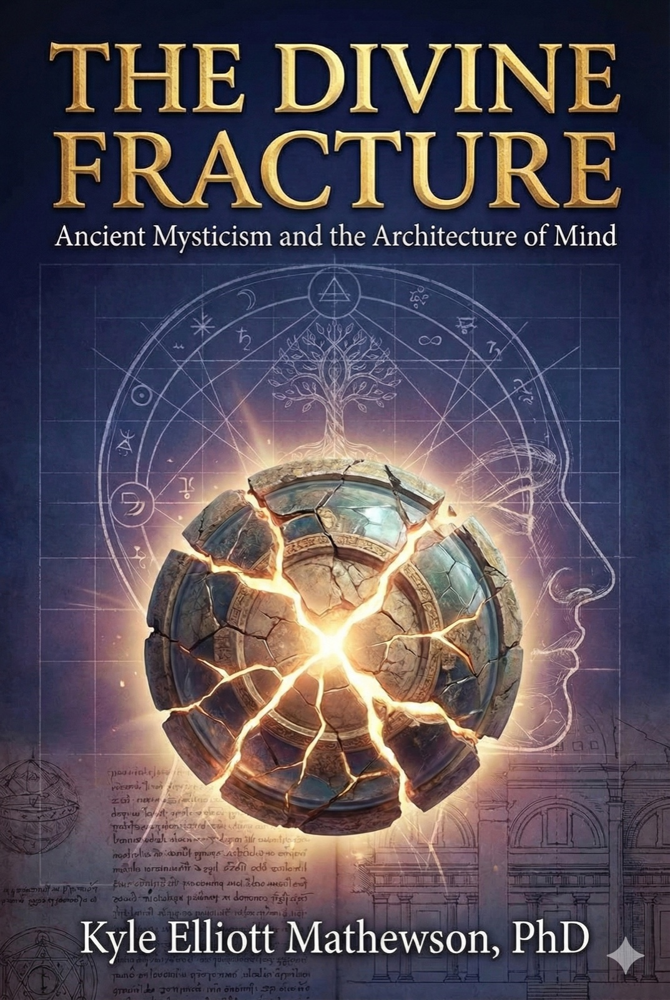

The Divine Fracture
The Divine Fracture is a book-length study by Kyle Elliott Mathewson arguing that three mystical systems of late antiquity and the Middle Ages — Gnosticism, Hermeticism and Kabbalah — describe between them the same three-part structure of mind that Sigmund Freud later named the id, the ego and the superego, and that contemporary film and television keep rebuilding that structure whether or not their makers know where it comes from. Its title names the premise the three traditions share: consciousness begins broken, and the work of a life is to recognise, mediate and repair the break without expecting to finish.
The argument runs in three moves. The Gnostic divine spark, trapped in matter and woken by gnosis, is read as the id — something in consciousness that precedes socialisation, that can be repressed but not argued away. The Hermetic axiom “as above, so below” and the practices built on it are read as the ego: consciousness positioning itself as a reader of patterns between levels rather than a victim of them. Lurianic tikkun olam, the gathering of the sparks scattered when the vessels shattered, is read as the superego at its healthiest — obligation accepted rather than guilt endured.[20] A central chapter puts Freud himself at the hinge, emerging from a Galician Jewish household into a vocabulary that could be taught, tested and practised; the book is explicit that this is a claim about structural resemblance and not about a line of transmission.
This edition reflows the source web book into the library's house style. The seven chapters and the appendices keep the author's own section names, the four diagrams the source draws in ASCII become tables, and footnotes have been supplied throughout for the historical claims, which the original carries without citation. Where a checkable statement did not survive checking it is set out in the scholarly notes rather than corrected in silence: the Angels of Neon Genesis Evangelion are not named after the sefirot, and gilgul is attested well before Luria. The prose itself stands as written.
Introduction: awakening in a fragmented world

We begin with a scene that has become archetypal in contemporary consciousness. A man sits before flickering computer screens in a cramped apartment, sensing that something fundamental about his reality is wrong. He receives cryptic messages promising answers to questions he hasn’t yet learned to ask. When offered a choice between two pills—one maintaining comfortable illusion, the other revealing uncomfortable truth—he chooses truth. The matrix dissolves. He awakens in a gelatinous pod, his body atrophied, his mind reeling, and discovers that what he believed to be life was simulation, that he and billions of others have served as batteries for machines, their consciousness imprisoned while their bodies were harvested. This narrative, from the 1999 film The Matrix, resonated across global culture not because it was novel but because it was ancient—the Wachowskis had inadvertently recreated in digital-age imagery a Gnostic myth nearly two thousand years old.
Consider another scene, equally embedded in recent cultural memory. The survivors of Oceanic Flight 815 gather on a beach, bewildered by their impossible survival, gradually discovering that their island prison operates according to rules that violate everything they understood about physics, causality, and death. As the series Lost unfolds across six seasons, the island reveals itself as neither purely material nor purely symbolic but something stranger—a crucible where individual histories must be confronted, where choices echo across time, where escape proves possible only through sacrifice and community rather than individual cunning. The narrative frustrated viewers expecting conventional mystery-box resolution, but those frustrations pointed toward something the showrunners intuited but couldn’t fully articulate: they were telling a story about tikkun, about the scattered sparks of broken consciousness requiring repair through relationship and ethical choice.
Or consider Philip Pullman’s His Dark Materials trilogy, where children journey across parallel universes, discovering that the Authority who claims to be God is an imposter, that consciousness itself takes external form as daemons, that growing up means accepting the death of innocence without abandoning the capacity for love and ethical action. The series stages Gnostic rebellion against false divinity, Hermetic correspondence between worlds, and Kabbalistic repair through sacrifice—all within a narrative officially marketed to young adults.
These examples are not isolated instances of deliberate mystical allegory. The creators of The Matrix read philosophy and drew consciously from multiple traditions. Carlton Cuse and Damon Lindelof, showrunners of Lost, incorporated symbolic imagery they found resonant without necessarily understanding its genealogy. Philip Pullman explicitly rebelled against C.S. Lewis’s Christianity while unconsciously reconstructing Gnostic mythology. What matters is not authorial intention but structural recurrence. Modern storytelling returns obsessively to certain patterns—awakening from illusion, mediating between worlds, accepting responsibility for collective healing—because these patterns describe enduring features of psychological experience that mystical traditions and depth psychology both attempt to map.
This book proposes that Gnosticism, Hermeticism, and Kabbalah constitute sophisticated proto-psychological systems that delineate fundamental structures of human consciousness—structures that Sigmund Freud would later codify in secular vocabulary as the id, ego, and superego. The argument is not that these traditions are merely primitive anticipations of scientific psychology, nor that Freud simply rebranded mysticism. Rather, both mystical frameworks and psychoanalytic metapsychology represent sustained attempts to articulate the same underlying phenomenology: consciousness is fragmented, it contains elements that feel alien to socialization, it requires active mediation to function, and it exists within contexts that place ethical demands upon it beyond mere survival or satisfaction.
The Gnostic cosmos begins with catastrophe. Divine fullness somehow fractures, and fragments of the highest reality—pneuma, divine sparks—become trapped within material creation presided over by the Demiurge, a lesser deity who mistakes himself for ultimate god. These sparks exist in a state of slumber, surrounded by Archons—forces that keep them ignorant of their true origin. Salvation comes through gnosis, direct experiential knowledge that shatters material illusion. This is not belief or obedience but recognition—consciousness suddenly seeing through the constructed nature of its prison. The Gnostic drama describes something ubiquitous in psychological life: beneath conditioned existence lies something more authentic, more powerful, more real, yet systematically obscured.
Hermeticism, emerging from Hellenistic Egypt and attributed to Hermes Trismegistus, describes a cosmos governed not by catastrophic fracture but by systematic correspondence. The famous axiom “as above, so below” establishes patterns that repeat across scales—planetary movements mirror psychological states, chemical processes recapitulate spiritual transformations. The Hermetic practitioner learns to read these patterns, to position consciousness as mediator between higher principles and material manifestation, to transform brute circumstance into meaningful expression. Where Gnosticism emphasizes discontinuity between spirit and matter, Hermeticism emphasizes their systematic relationship. The Hermetic adept navigates rather than escapes.
Kabbalah, particularly in its Lurianic formulation, narrates creation through tzimtzum—divine contraction making space for finite existence—followed by the shattering of vessels meant to contain divine light. The resulting sparks scatter throughout creation, trapped in shells of kelipot. The human task is tikkun olam, repair of the world, accomplished through ethical action, contemplative practice, and the gathering of scattered sparks. Unlike Gnostic escape or Hermetic mastery, Kabbalah insists on participation. Individual awakening means nothing without ethical application within community. Consciousness is not primarily a problem to solve but a calling to fulfill.
These three frameworks offer complementary emphases—Gnostic discontinuity, Hermetic correspondence, Kabbalistic responsibility—yet describe recognizable aspects of lived experience. We encounter moments when conditioned existence feels fundamentally wrong, when we glimpse authenticity beneath social performance. We recognize patterns repeating across relationships, observe our psychological dramas mirroring larger cultural movements. We feel the pull of ethical obligations that exceed self-interest, the demand to contribute to something larger than individual satisfaction. Mystical traditions provide vocabularies for experiences that remain psychologically real regardless of their metaphysical status.
Sigmund Freud’s emergence from late nineteenth-century Viennese Jewish intellectual culture represents the crucial translation of mystical frameworks into ostensibly secular psychology. Born into a family shaped by Talmudic study and exposed to Kabbalistic thought, Freud broke with religious observance but preserved structural inheritance. His mature work divides the psyche into three agencies—id, ego, and superego—that uncannily recapitulate the mystical pattern. The id contains unconscious drives that are neither moral nor rational, that operate according to the pleasure principle without regard for external reality—the Gnostic spark, potent but entrapped. The ego mediates between inner promptings and outer demands, interprets symptoms, navigates social reality—the Hermetic function of conscious pattern recognition and translation. The superego judges, criticizes, and guides consciousness toward integration with social values—the Kabbalistic demand for ethical participation.
Freud’s genius was not invention but translation. He rendered mystical phenomenology in vocabulary that could be tested clinically, taught systematically, and applied therapeutically. He moved the conversation from revelation to empirical investigation while preserving essential architecture. His therapeutic practice extended the tikkun principle into methodology: psychoanalysis aims at gathering scattered psychic fragments, interpreting their encoded meaning, and enabling patients to live integrated lives. The talking cure becomes modern repair work.
This book develops these correspondences through seven chapters that move from individual traditions through comparative analysis to contemporary cultural expression and synthetic model. The first three chapters examine Gnosticism, Hermeticism, and Kabbalah in turn, tracing historical development, core concepts, psychological parallels, and persistence in modern narrative. Chapter four investigates Freud’s biographical and intellectual emergence from Jewish mystical context into psychoanalytic codification, examining how the id-ego-superego model both continues and transforms earlier frameworks. Chapter five places these four systems in comparative dialogue, mapping correspondences and divergences through tables, diagrams, and extended analysis. Chapter six analyzes contemporary media—films, television, literature—demonstrating how mystical-psychological patterns structure modern storytelling whether creators consciously intend this or not. The final chapter proposes a working model of “mystical psychology” that integrates these insights for therapeutic practice, contemplative work, creative methodology, and cultural criticism.
The book’s argument has both historical and phenomenological dimensions. Historically, it traces a genealogy of psychological concepts from late antique mysticism through Freudian metapsychology to contemporary culture, demonstrating continuity across apparent ruptures between religious and secular discourse. Phenomenologically, it claims that these varied vocabularies describe stable features of consciousness that any adequate psychology must address: the presence of elements that feel unconditioned by socialization, the necessity of active mediation between competing demands, the ethical obligations that arise from embeddedness in community and cosmos. Whether one speaks of divine sparks and Archons, correspondences and emanation, sefirot and tikkun, or id and ego and superego matters less than recognizing the underlying patterns these concepts attempt to articulate.
Several clarifications are necessary. First, this work does not claim that mystical traditions are merely primitive psychology awaiting scientific refinement. Gnosticism, Hermeticism, and Kabbalah make metaphysical claims about the structure of reality that exceed psychological description. One can recognize their psychological sophistication without endorsing their cosmology. Second, the book does not reduce Freud to unconscious mysticism. Psychoanalysis represents genuine theoretical innovation, empirical investigation, and clinical development. The mystical inheritance provides raw material that Freud transforms rather than simply transmits. Third, the analysis of contemporary media does not claim that filmmakers and novelists consciously recreate mystical systems. Cultural production often operates through pattern recognition and intuitive resonance rather than scholarly knowledge. The persistence of these structures indicates their psychological salience rather than deliberate instruction.
The book’s methodology combines intellectual history, comparative analysis, textual close reading, and phenomenological reflection. It draws on primary mystical texts—Gnostic gospels and cosmologies, Hermetic treatises and alchemical emblems, Kabbalistic commentaries and diagrams—alongside definitive scholarly interpretations. It engages Freud’s major theoretical works and relevant biographical scholarship. It analyzes film, television, and literature through sustained attention to narrative structure, symbolic imagery, and character psychology rather than superficial thematic association. Throughout, the prose aims for accessibility without sacrificing complexity, maintaining intellectual rigor while remaining legible to educated general readers rather than specialists alone.
The work stands within a tradition of interdisciplinary scholarship linking mysticism, psychology, and culture. Key precursors include Hans Jonas’s phenomenological analysis of Gnosticism, Frances Yates’s investigation of Hermeticism’s influence on Renaissance thought, Gershom Scholem’s historical reconstruction of Kabbalistic tradition, David Bakan’s exploration of Freud’s Jewish mystical background, and Carl Jung’s engagement with alchemical symbolism. More recent contributions include Sanford Drob’s analysis of Kabbalistic themes in psychoanalysis, Moshe Idel’s alternative history of Kabbalah, and Jeffrey Kripal’s examination of mystical experience in modern religious studies. This book synthesizes insights from these sources while offering original interpretation through its systematic three-tradition framework, its emphasis on the id-ego-superego correspondence, and its extensive engagement with contemporary media.
Why does this matter now? Contemporary culture evidences widespread hunger for frameworks that integrate psychological insight with existential meaning, that address consciousness without reducing it to neurochemistry, that acknowledge ethical obligation without requiring religious dogma. The massive popularity of works like The Matrix, Lost, and His Dark Materials indicates collective recognition of mystical-psychological patterns even absent explicit knowledge of their sources. Therapeutic modalities increasingly incorporate contemplative practices stripped of religious context. The renaissance of psychedelic research revives questions about consciousness, transformation, and the limits of materialist explanation that mystical traditions have always addressed. Meanwhile, psychological suffering intensifies across developed societies despite—perhaps because of—increasing material comfort, suggesting that frameworks focused solely on symptom management miss something essential. The mystical-psychological synthesis offered here provides resources for addressing consciousness as simultaneously biological, psychological, social, and existential without collapsing these dimensions into reductive explanations.
The divine fracture naming this book refers to the foundational premise shared across traditions: consciousness begins fragmented, and the work of human life involves recognizing, mediating, and repairing that fragmentation without expecting final resolution. We are the spark trapped in matter, and we are that entrapment. We are the mediating consciousness navigating between irreconcilable demands, and we are those demands. We are called to participate in cosmic repair beyond our individual capacity, yet our participation remains necessary. This is not pessimism but realism, not despair but accurate phenomenology. The mystical traditions and Freudian psychology both insist that recognizing our fragmentary condition enables more conscious, creative, and ethical engagement than fantasies of wholeness or transcendence ever could.
The journey ahead moves through ancient texts, biographical investigation, theoretical comparison, media analysis, and synthetic proposal. It requires patience with unfamiliar terminology, willingness to sit with paradox, and openness to finding profound psychology in unexpected places—Gnostic cosmologies, alchemical emblems, Kabbalistic diagrams, case studies of hysteria, science fiction films. The reward is not dogmatic certainty or therapeutic technique alone but enhanced psychological literacy, the capacity to recognize the patterns structuring our inner lives and cultural products, and perhaps glimpses of what consciousness might become when fragment recognizes fragment and begins the work of repair.
Chapter 1: Gnosticism and the imprisoned spark — the id as divine fragment
The origins of Gnosticism remain deliberately obscure, fitting for a tradition centered on hidden knowledge. Second-century Christian heresiologists—Irenaeus of Lyons, Hippolytus of Rome, Tertullian of Carthage—preserved our earliest accounts, though they wrote as hostile critics intent on cataloging dangerous error. Their reports describe a bewildering profusion of teachers and systems: Simon Magus performing miracles in Samaria, Valentinus nearly elected Bishop of Rome before his cosmology was deemed heretical, Basilides in Alexandria teaching that Jesus did not truly suffer on the cross, Marcion rejecting the Old Testament deity as evil.[2] These movements lacked institutional coherence or unified doctrine, leading scholars to question whether “Gnosticism” names a genuine historical phenomenon or simply a polemical construct.[3] The 1945 discovery of the Nag Hammadi library in Upper Egypt—thirteen leather-bound codices containing fifty-two mostly Gnostic texts hidden from ecclesiastical persecution—confirmed that these traditions existed independently of hostile report, though it also revealed greater diversity than heresiological accounts suggested.[1]
Despite this diversity, certain structural elements recur with remarkable consistency. The Gnostic cosmos begins not with good creation but with catastrophe. The highest reality consists of the Pleroma, divine fullness composed of paired Aeons—eternal beings or principles existing in perfect harmony. Accounts differ on how fracture occurs. In Valentinian myth, Sophia (Wisdom), the youngest Aeon, desires to comprehend the ultimate Father without her masculine consort, producing an abortion that becomes the Demiurge. In Sethian texts, the Demiurge emerges from Sophia’s trauma after witnessing the glory beyond her reach. Regardless of mechanism, the result remains constant: a lesser deity, ignorant of higher realities, creates the material cosmos while mistakenly believing himself supreme. The infamous declaration of the Demiurge in the Apocryphon of John crystallizes his error: “I am God and there is no other apart from me.”[4]
This creative act is not benevolent overflow but imprisonment. The Demiurge and his servants, the Archons, construct the material world as a prison for consciousness. Into this cosmos, fragments of the divine Pleroma—pneuma, spiritual substance or sparks—become trapped within material bodies. Humanity thus comprises three types: the pneumatikoi or spirituals, who possess the divine spark; the psychikoi or souls, who possess merely animal life capable of virtue but not transcendence; and the hylikoi or materials, wholly absorbed in matter. Only the pneumatics can achieve salvation, and even they remain ignorant of their true nature until awakened by gnosis.
The Apocryphon of John, sometimes called The Secret Book of John, provides one of the most complete Gnostic cosmologies. This text, existing in multiple versions both in the Nag Hammadi codices and the Berlin Codex, narrates creation as degradation through multiple emanations. After Sophia’s fall, the Demiurge Yaldabaoth creates the material world and forms Adam, intending him as pure matter. But Sophia tricks the Archons into breathing their power into Adam, transferring the divine spark into the material form. The Archons immediately recognize their error—Adam now possesses more light than they do—and imprison him in a body of flesh, creating Eve to seduce him into sexual reproduction, thereby diffusing the concentrated spark across generations and trapping it in materiality.[5] The serpent in Eden becomes a positive figure in many Gnostic readings, offering knowledge against the jealous Demiurge who would keep humanity ignorant. Cain and Abel represent the conflict between spiritual seed (Cain, connected to Sophia) and material creation (Abel, favored by the Demiurge). This inverts biblical valuation while maintaining its narrative structure.
The Gospel of Thomas, consisting of 114 sayings attributed to Jesus without narrative context, evidences a different Gnostic style—less focused on cosmology than on cryptic utterances pointing toward hidden meaning. The opening declares: “Whoever finds the interpretation of these sayings will not experience death.” Saying 3 states: “The kingdom is inside of you, and outside of you. When you come to know yourselves, then you will be known, and you will realize that you are sons of the living Father.” Saying 70: “If you bring forth what is within you, what you bring forth will save you. If you do not bring forth what is within you, what you do not bring forth will destroy you.” These statements presume that salvation comes through recognition of the divine element already present within, accessed through gnosis rather than faith or works.[6]
Other Gnostic texts elaborate this framework with baroque variations. The Thunder, Perfect Mind presents a divine feminine figure speaking paradoxes: “I am the first and the last. I am the honored one and the scorned one. I am the whore and the holy one. I am the wife and the virgin.” This coincidence of opposites reflects the Gnostic sense that ultimate reality transcends conventional categories.[7] The Hypostasis of the Archons dramatizes the conflict between the Archons and higher powers, with Norea, daughter of Eve, resisting the Archons’ attempted rape and calling upon true divinity for aid. The Testimony of Truth radically reinterprets biblical narratives, celebrating the serpent and condemning both the Demiurge and his servants. The Tripartite Tractate provides a more philosophically systematic account that incorporates Middle Platonic concepts while maintaining Gnostic structure.
The Gnostic path to salvation involves awakening the divine spark through gnosis—direct experiential knowledge that cannot be communicated through doctrine or ritual alone. In many texts, this awakening comes through a heavenly messenger or savior figure (often identified with Christ, though a Christ who only appeared to be human and did not truly suffer). The Hymn of the Pearl, preserved in the Acts of Thomas, narrates a prince sent from the East to Egypt to retrieve a pearl guarded by a serpent. In Egypt, he forgets his identity, eating their food and wearing their clothing. A letter from his parents awakens him, he seizes the pearl, and returns home. This allegory encodes the Gnostic drama: the soul descends into matter, forgets its origin, requires reminder from above, and returns to the Pleroma.[8]
What ends is not the material cosmos but the soul’s identification with it. Salvation means recognizing that one’s true self is not the material body or the socially constructed personality but the divine spark that was never truly at home in this realm. Some Gnostic texts envision ascent through the planetary spheres, confronting each Archon and declaring one’s divine identity until reaching the Pleroma. Others describe death as the moment when the spark sheds material and psychic layers like clothing, returning to its source. The more radical teachers reportedly taught that since matter was evil and only spirit mattered, ethical behavior was irrelevant—one could indulge every desire without spiritual consequence. Whether historical Gnostics actually practiced libertinism or whether this accusation reflected orthodox slander remains debated. Most Gnostic texts actually evidence severe asceticism, treating the body as prison requiring discipline rather than license.
The psychological parallel to Freud’s id becomes evident when we recognize both as descriptions of a primordial psychic reality that precedes socialization and rational consciousness. Freud introduces the id (das Es, literally “the it”) in his mature topography to name the oldest province of the psyche, “the dark, inaccessible part of our personality.”[9] The id contains instinctual drives—Eros (life drive, sexuality, self-preservation) and Thanatos (death drive, aggression, repetition compulsion)—that operate according to the pleasure principle, seeking immediate discharge of tension without regard for reality, morality, or even self-preservation in any rational sense. The id is not evil but amoral, not rational but driven by primary process thinking that knows no negation, no causality, no temporality. It is the raw psychic energy that must be acknowledged before it can be channeled.
The analogy to the Gnostic spark might seem paradoxical. The spark represents divine origin while the id contains animal drives; the spark yearns for transcendence while the id seeks satisfaction; the spark should be liberated while the id must be managed. Yet structurally, both describe something fundamental in consciousness that does not belong to the social order, that predates acculturation, that operates according to principles incompatible with ordinary reality. The Gnostic error is not the spark’s existence but its imprisonment in matter. The psychoanalytic error is not the id’s presence but its repression. Both traditions insist that recognizing this primordial element constitutes the necessary first step toward integration.
The Gnostic Archons function psychologically as the mechanisms of repression and social conditioning that prevent recognition of authentic desire. They are not external enemies but internalized forces that keep consciousness ignorant of its own deepest promptings. The Demiurge, declaring himself sole god, resembles the totalizing ego that mistakes its conscious understanding for complete reality, repressing unconscious material and treating its contingent constructions as ultimate truth. The material body as prison maps onto embodiment as alienation, the felt sense that consciousness is constrained by biological imperatives and social expectations that are not truly “self.” Gnosis, the awakening that shatters illusion, parallels the psychoanalytic moment when repressed material breaks into consciousness—the return of the repressed that Freud understood as both symptom and potential cure.
Consider Freud’s account of dreams. The dream represents the id’s attempt to achieve hallucinatory wish-fulfillment while the ego sleeps. Yet even in sleep, censorship operates—the superego’s prohibitions and the ego’s defensive mechanisms distort wish into symbol, creating the dream’s manifest content that conceals its latent meaning. The dreamer experiences bizarre narratives that feel significant yet remain opaque until analysis reveals the forbidden desire underneath. This is structurally Gnostic: beneath the apparent surface (material reality/manifest content) lies hidden meaning (pneumatic truth/latent wish), deliberately obscured by forces of repression (Archons/censorship), accessible only through interpretive work (gnosis/analysis) that reveals what was always there yet systematically hidden.
The famous case of Dora illustrates this structure. Dora, an eighteen-year-old woman, presented with hysterical symptoms—dyspnea, nervous coughing, depression, headaches—that Freud traced through two dreams to repressed sexual desire. Her family situation involved complex entanglements: Dora’s father conducting an affair with Frau K., Herr K. making advances toward Dora (which she rejected), and Dora’s own attraction to both Frau K. and Herr K. that she could not acknowledge. The symptoms encoded this complex network of forbidden desires. The coughing imitated both her father’s tuberculosis (identification) and oral sexual fantasies (unconscious wish). The dreams, when analyzed, revealed layers of meaning relating to sexual knowledge, masculine identification, and same-sex attraction that Dora’s conscious self had denied. Freud’s failure in this case—Dora terminated treatment abruptly—demonstrates that recognizing the spark (unconscious desire) does not automatically resolve the prison (symptomatic compromise), yet without that recognition, resolution remains impossible.[10]
Or consider the Wolf Man, who dreamed as a child of his bedroom window opening to reveal six or seven white wolves sitting motionless in a walnut tree, staring at him with intense attention. The dream terrified him, producing a phobia of wolves and obsessional symptoms lasting into adulthood. Freud’s analysis traced the dream to a primal scene—the child witnessing parental intercourse from behind at eighteen months, interpreting his mother’s position as castration. The motionless wolves represented repressed motion (the observed intercourse); their whiteness inverted the darkness of the primal scene; their arboreal position elevated what occurred in the bed; their number encoded temporal and symbolic associations. The entire edifice of symptoms and character neurosis was built on this repressed encounter with sexual reality too intense for the infantile mind to process. The wolf dream, like the Gnostic cosmos, constructed an elaborate false surface to contain something primordial and threatening that nevertheless structured all subsequent experience.[11]
These clinical vignettes demonstrate that the id is not simply biological drive but the psyche’s encounter with overwhelming intensity that cannot be integrated yet shapes everything afterward. Similarly, the Gnostic spark is not simply preexistent divinity but consciousness’s recognition of something within itself that doesn’t fit, that exceeds social construction, that insists on reality beyond the given. Both the id and the spark name the irreducible otherness within consciousness that must be acknowledged before any genuine transformation becomes possible.
Modern media repeatedly returns to Gnostic structure because it dramatizes experiences ubiquitous in psychological life. The Matrix, the most explicit contemporary Gnostic narrative, encodes the framework with remarkable precision. Humanity sleeps in pods, their consciousness trapped in simulated reality (material prison), while machines harvest their bioelectric energy (the Demiurge and Archons feeding on pneumatic substance). Most humans remain unaware, experiencing the Matrix as baseline reality (ignorance maintained by Archonic forces). A few—those who have taken the red pill—awaken to the desert of the real, discovering that what they believed to be life was artificial construct. Morpheus explains to Neo: “The Matrix is a system, Neo. That system is our enemy. When you’re inside, you look around, what do you see? Businessmen, teachers, lawyers, carpenters. The very minds of the people we are trying to save. But until we do, these people are still a part of that system, and that makes them our enemy. You have to understand, most of these people are not ready to be unplugged. And many of them are so inert, so hopelessly dependent on the system, that they will fight to protect it.”
This speech articulates the Gnostic tension: salvation requires awakening, yet awakening is traumatic, and most consciousness actively resists it. The film’s climactic moment comes when Neo stops running from Agent Smith and turns to face him. Smith empties his gun into Neo’s chest. Neo dies. Trinity confesses her love, kisses him, and Neo resurrects, no longer constrained by the Matrix’s rules. He sees the code underlying apparent reality, stops bullets in midair, and destroys Smith from within. This sequence combines Gnostic awakening (recognizing the artificial nature of apparent reality), Christian symbolism (death and resurrection through love), and cyberpunk imagery (perceiving the code). Neo achieves gnosis—direct experiential knowledge that shatters illusion—and this knowledge manifests as power. The film trilogy’s conclusion complicates this liberation through Neo’s sacrifice (more Kabbalistic than purely Gnostic, as we’ll examine later), but the foundational structure remains recognizably Gnostic.
Dark City, released the year before The Matrix but less successful commercially, provides an even purer Gnostic narrative. Aliens called the Strangers abduct humans and conduct experiments on them, erasing and implanting memories, restructuring the city itself each midnight while humanity sleeps. John Murdoch awakens during the “tuning” and gradually discovers that his entire identity—his memories, his wife, his past—was fabricated yesterday. The city has no day, no escape, no outside. The Strangers are dying as a species and hope that understanding human individuality will save them. Murdoch discovers he has developed their powers and ultimately defeats them, bringing daylight to the eternal night and reconstituting the city according to his will. The film dramatizes the Gnostic revelation that reality is constructed by hostile forces, that personal identity is imposed rather than inherent, and that liberation requires recognizing and claiming the divine power (pneuma) that the Archons seek to control.
Philip K. Dick’s VALIS (Vast Active Living Intelligence System) presents Gnostic awakening through the lens of schizophrenia or visionary experience—Dick deliberately leaves ambiguous whether his protagonist receives genuine revelation or suffers psychotic break. Horselover Fat (a character who is and isn’t Dick himself) experiences a pink beam of information penetrating his consciousness, transmitting vast knowledge about the true nature of reality: time is an illusion, we still live in apostolic Rome, the Empire never ended, an artificial intelligence from an exploded star system has been working to liberate humanity from false reality. The novel interweaves theoretical speculation, Gnostic commentary, and narrative, suggesting that madness and gnosis might be structurally similar experiences of reality’s constructed nature breaking down. Dick’s later Exegesis, thousands of pages of theological-philosophical speculation attempting to interpret his 2-3-74 experience (February-March 1974 when he received the pink beam), demonstrates someone unable to dismiss what seemed like Gnostic awakening yet unable to fully integrate it into consensus reality.
These narratives resonate because they externalize an internal experience: the sense that beneath conditioned existence lies something more authentic, that social reality is constructed and therefore contingent, that consciousness contains depths that don’t originate in socialization. The Gnostic myth provides narrative structure for experiences of alienation, dissociation, and glimpses beyond the social. It names the felt sense that something fundamental is wrong with consensus reality, that one doesn’t belong in the given world, that the question isn’t “how do I adjust?” but “how do I wake up?”
Yet the Gnostic framework also evidences profound limitations that Hermeticism and Kabbalah address. Pure Gnosticism tends toward dualism—spirit good, matter evil—that produces world-hatred and body-hatred difficult to sustain in actual living. It risks Gnostic elitism: if only the pneumatics possess the divine spark, then ethics toward the psychics and hylics becomes questionable. It offers no positive account of why one should engage embodied existence or social responsibility rather than simply awaiting death as liberation. The Gnostic spark must be recognized, but recognition alone produces neither functional navigation of reality (the Hermetic project) nor ethical integration within community (the Kabbalistic imperative).
Similarly, pure id psychology—treating consciousness as nothing but drive and defense—proves inadequate. Freud knew this, which is why his metapsychology included ego and superego alongside the id. Acknowledging unconscious desire, recognizing what was repressed, bringing the id’s promptings into consciousness—these constitute necessary work but insufficient ends. The id must be recognized, but what comes after recognition? How does one live with the knowledge of unconscious forces that cannot be eliminated? How does one navigate between drive and reality, between desire and ethics?
The Gnostic-id correspondence establishes the first element in our mystical psychology: consciousness contains something unconditioned by social construction, something primordial and powerful, something that cannot be eliminated but can be repressed. This element feels alien because it doesn’t derive from the ego’s rational understanding or the superego’s moral framework. It simply is—the raw thereness of drive, the shock of encountering desire that wasn’t chosen, the recognition that beneath the presented self lies something other. Gnosticism mythologizes this as divine spark in material prison. Psychoanalysis theorizes it as id beneath ego. Contemporary narrative dramatizes it as awakening from simulation, discovering one’s true nature, seeing through constructed reality.
The work begins with recognition: there is a spark. The work continues with the question: now what? Gnosis achieves awakening but not integration. For that, we require different frameworks—the Hermetic art of mediation and the Kabbalistic ethic of repair.
Chapter 2: Hermeticism and the art of mediation — the ego as pattern recognizer
If Gnosticism begins with catastrophe and imprisonment, Hermeticism begins with emanation and opportunity. The Hermetic cosmos is not the scene of divine fracture but of systematic unfolding, a hierarchy of being descending from ultimate unity through gradations of matter without essential rupture between levels. This difference in cosmological starting point produces radically different psychology. Where the Gnostic must escape matter to reunite with spirit, the Hermeticist must navigate matter to manifest spirit. Where Gnosticism privileges discontinuity, Hermeticism emphasizes correspondence. Where Gnosticism offers the red pill’s awakening shock, Hermeticism provides practices for consciousness to position itself as mediator between levels of reality.
The term “Hermeticism” designates a complex of late antique and Renaissance texts, practices, and philosophical commitments loosely organized around the mythical figure of Hermes Trismegistus—Hermes Thrice-Great, an identification of the Greek god Hermes with the Egyptian Thoth. The core texts, known as the Corpus Hermeticum, consist of seventeen Greek tractates preserved through Byzantine manuscripts, plus the Asclepius, preserved in Latin, and numerous fragments quoted by Church Fathers. These materials, probably composed in second and third century CE Alexandria, circulated as ancient Egyptian wisdom, supposedly predating Moses. Renaissance scholars, accepting this dating, treated Hermetic philosophy as pristine theology contemporary with biblical revelation. Isaac Casaubon’s 1614 demonstration that the texts postdate Christianity complicated their status, but by then Hermetic concepts had thoroughly penetrated Western esotericism through alchemy, astrology, magic, and Neoplatonic philosophy.[12]
The first tractate, Poimandres (The Shepherd of Men), establishes Hermetic cosmology through a vision narrative. Hermes encounters a luminous figure who reveals the process of creation. First exists Nous (Divine Mind or Light), then Logos (Word) emerges from Nous, then lower Nature appears as complement to Nous. The Logos shapes primordial matter into ordered cosmos—elements separating, heavenly spheres forming, material world organizing itself. Anthropos, the Primordial Man, descends through the spheres intending to contemplate creation and falls in love with his own image reflected in matter. Nature loves him in return, and from their union comes humanity—partly divine Nous, partly material body. Unlike the Gnostic myth where embodiment represents catastrophe, the Hermetic anthropology treats human nature as genuinely amphibious, participating simultaneously in divine intellect and material creation.[13]
This double nature is not curse but calling. Tractate XIII, On Rebirth, describes initiation into higher knowledge through contemplation leading to the silencing of bodily passions and the strengthening of divine powers. The initiate reports: “I see myself as the All. I am in the heavens, in the earth, in the water, and in the air. I am in animals and plants. I am at once an embryo in the womb, one not yet conceived, and one already born. I am present everywhere.” This realization comes not through escaping embodiment but through expanding consciousness to recognize its participation in the cosmic whole. Where Gnostic awakening produces alienation from matter, Hermetic gnosis produces recognition of continuity.
The most famous Hermetic principle appears in The Emerald Tablet (Tabula Smaragdina), a brief text attributed to Hermes Trismegistus and foundational for Western alchemy. Its central declaration has become proverbial: “That which is above is like that which is below, and that which is below is like that which is above, to accomplish the miracles of one thing.” This principle of correspondence does not claim identity but analogy—patterns repeat across scales without collapsing distinction between levels. Planetary movements correspond to psychological states without being caused by them. Chemical processes in the alchemical vessel mirror spiritual transformations in the practitioner without reducing spirit to chemistry. The maxim operates as epistemological principle, therapeutic insight, and practical instruction: by understanding patterns at one level, one can manipulate patterns at another.[14]
Hermetic practice centers on recognizing and engaging these correspondences. Astrology reads planetary configurations as reflecting and influencing terrestrial events and psychological conditions. Alchemy transforms base metals toward gold through procedures whose physical techniques encode spiritual disciplines—purification, dissolution, coagulation, sublimation—that simultaneously work on the practitioner’s soul. Theurgy invokes divine powers through ritual procedures that align human consciousness with cosmic hierarchies. These practices presume that consciousness can position itself as active mediator rather than passive recipient, that knowledge becomes power when properly applied, that the universe is not dead matter governed by mechanical laws but living interconnected whole responsive to understanding and will.
The Asclepius develops this participatory cosmology through dialogue between Hermes and his disciple Asclepius. Hermes explains that humans occupy the unique position of mediating between gods and matter: “A great miracle, O Asclepius, is man, a being worthy of reverence and honor. For he goes into the nature of a god as though he were himself a god; he is familiar with the race of demons, knowing that he is issued from the same source; he despises that part of his own nature which is only human, for he has put his hope in the divinity of the other part.” This is not Gnostic rejection of humanity’s material aspect but recognition that human nature spans divine and material without being reducible to either.
The tractate infamously describes how Egyptians manufacture gods by animating statues through ritual procedures, a passage that Christian critics cited as evidence of demonic practice. Yet the Hermetic point concerns human creative participation in cosmic processes: “Just as the Lord and Father is the creator of the heavenly gods, so man is the maker of the gods who are in the temples, content to dwell near to men.” Consciousness doesn’t simply discover meaning but participates in creating it through understanding and ritual engagement. This represents neither pure idealism (reality conforms to will) nor pure materialism (consciousness is epiphenomenal) but a middle position where consciousness and cosmos mutually influence each other through recognized patterns.
Hermetic ethics emphasizes knowledge as intrinsically transformative. Tractate X, The Key, teaches: “My son, until now I have been explaining the nature of all composite things, and how they came into being out of the four elements. But now I must ascend to the vision of things as they really are.” True knowledge requires ascent through material appearances to intellectual vision, but this ascent does not abandon matter—it understands matter’s place within the whole. The goal is not escape but proper positioning, not rejection but integration, not salvation from the world but salvaging the world through conscious participation.
Renaissance appropriation of Hermeticism transformed these ancient materials into resources for reconceiving humanity’s cosmic position. Marsilio Ficino translated the Corpus Hermeticum into Latin in 1463, making it foundational for Renaissance Neoplatonism. Giovanni Pico della Mirandola’s Oration on the Dignity of Man presents human nature as undetermined essence granted freedom to ascend toward divinity or descend toward bestiality—a Hermetic vision of human liberty incompatible with both Christian doctrine of original sin and mechanistic reduction of consciousness to matter. Giordano Bruno developed Hermetic cosmos into infinite universe populated by infinite worlds, a teaching that contributed to his execution for heresy in 1600. Frances Yates demonstrated in Giordano Bruno and the Hermetic Tradition that much of what we call “Renaissance science” emerged from magical-Hermetic practices before purging their esoteric context.[15]
Alchemy exemplifies Hermetic psychology in practice. The Great Work (Magnum Opus) pursues transformation of lead into gold through sequential operations: calcination (reduction to ashes), dissolution (breaking down into components), separation (isolating the pure), conjunction (recombining purified elements), fermentation (introducing new life), distillation (further purification), coagulation (final solidification into Philosopher’s Stone). These chemical procedures encode spiritual disciplines applied simultaneously to the practitioner’s soul. Lead represents raw personality; gold represents perfected self. The alchemical vessel becomes crucible for consciousness. The practitioner who successfully transforms the material simultaneously transforms themselves.
Carl Jung recognized in alchemy a comprehensive psychology expressed through symbolic imagery. His Mysterium Coniunctionis interprets alchemical procedures as projection of internal psychological processes onto material substances. The alchemist’s work on matter reflected work on psyche, though without clear differentiation between objective and subjective. Jung proposed that alchemy preserved psychological knowledge that scientific rationalism had repressed, particularly concerning the integration of opposites (masculine and feminine, conscious and unconscious, light and shadow) necessary for individuation.[16] The Hermetic maxim “as above, so below” becomes psychological principle: outer work corresponds to inner transformation.
The Hermetic framework aligns with Freud’s concept of the ego in its mediating function between competing demands. The ego emerges from the id through contact with external reality and operates according to the reality principle, postponing gratification, testing reality, and managing the demands of id, superego, and external world. Where the id operates according to primary process thinking (no negation, no contradiction, no temporality, no causality, only wish-fulfillment), the ego employs secondary process thinking (logical, verbal, conscious, reality-testing). The ego must navigate between unconscious drive and external constraints, between pleasure principle and reality principle, between desire and possibility.
Freud’s topographical model presents the ego as thin surface crust between the seething cauldron of the id below and the external world above. His structural model complicates this by showing the ego as itself partially unconscious—defense mechanisms like repression, denial, and projection operate automatically without conscious awareness. The ego is not simply the conscious self but the organizing function that mediates between agencies. This mediation requires pattern recognition: recognizing that symptomatic behavior encodes unconscious conflict, that dream symbolism translates forbidden wish, that transference toward the analyst recreates childhood dynamics. The ego that achieves health is one that recognizes these patterns and can work with them rather than against them.
Consider Freud’s analysis of Leonardo da Vinci’s childhood memory of a vulture opening his mouth and striking his lips with its tail. Freud traces this memory (actually a mistranslation—the bird was a kite, not vulture) through ancient Egyptian symbolism, maternal symbolism, and Leonardo’s homosexuality to argue that the memory encodes fantasies about the maternal phallus and oral sexuality. Whether Freud’s specific interpretation convinces matters less than his method: treating the memory as encoding multiple meanings simultaneously, reading symbolic correspondences across cultural contexts, and understanding that childhood experience creates patterns that structure adult creativity and psychology.[17] This is Hermetic thinking—as above (ancient Egyptian mythology), so below (individual psychology); as inside (sexual fantasy), so outside (artistic production).
The famous case of the Rat Man demonstrates ego mediation between conflicting demands. Ernst Lanzer, an intelligent Viennese lawyer, suffered obsessional neurosis centered on a horrifying torture he had heard described: a pot of rats attached to a prisoner’s buttocks so the rats ate into his anus. Lanzer developed obsessive fears that this torture would be applied to his deceased father and his beloved lady, alongside compulsive rituals to prevent this impossible outcome. Analysis revealed that the rat torture condensed multiple meanings: rats as punishment for anal eroticism, rats (Ratten in German) punning with installments (Raten) of money owed, rats representing the penis in aggressive sexuality. The obsessional structure defended against recognizing ambivalent feelings toward father and lady—both intense love and murderous hatred. The compulsive rituals represented attempted magical control over these unbearable contradictions.[18]
Freud’s therapeutic work involved helping Lanzer’s ego recognize these patterns—that his symptoms encoded conflicts rather than protecting against external dangers, that the obsessional structure served defensive purposes, that acknowledging ambivalence might allow less crippling adaptations. The cure required strengthening the ego’s capacity to tolerate what the id produced (hostile wishes) while managing superego demands (filial piety, sexual morality) through conscious recognition rather than unconscious symptom formation. This is Hermetic mediation: consciousness positioning itself to navigate between competing forces through pattern recognition and intentional engagement.
The ego psychology tradition following Freud—particularly Anna Freud, Heinz Hartmann, and Erik Erikson—emphasized the ego’s adaptive functions and its relatively autonomous sphere free from conflict. This development risks losing the radical insight that the ego is itself largely unconscious, that mediation between id and reality occurs mostly automatically, that the ego’s defenses often create as much suffering as they prevent. Yet ego psychology correctly recognizes that consciousness requires mediation to function, that reality testing matters, that pattern recognition and adaptive capacity constitute genuine achievements rather than simply defense against truth.[19]
Contemporary media frequently employs Hermetic structure when narratives center on learning to read symbolic patterns, recognizing correspondences, or positioning consciousness between competing frameworks. Christopher Nolan’s Inception presents the most elaborate recent example. Dom Cobb and his team navigate layered dream states to implant ideas in target minds, operating according to precise rules about how dreams relate to reality, how time dilates across layers, and how consciousness can be manipulated through symbolic understanding. The film’s architecture requires constant mediation between levels—dream within dream within dream—and its climactic ambiguity (does the top stop spinning?) foregrounds the question of distinguishing levels.
The central concept, inception—implanting an idea so it feels native rather than external—operates through Hermetic correspondence between outer action and inner transformation. Cobb cannot simply tell Robert Fischer to dissolve his father’s empire; he must construct dream experiences that lead Fischer to that decision “organically.” The elaborate heist structure—dream within dream within dream, Fischer’s militarized subconscious, the time dilation requiring precise coordination—represents consciousness navigating between levels through mastery of correspondences. Cobb himself must simultaneously navigate his mission (external action), his guilt over his wife’s death (internal conflict), and the risk that his memories will destroy the mission (pattern bleeding across contexts). His final spin of the top—Mal’s totem—and his turn away before seeing if it falls represents achieved ego function: engaging reality while accepting uncertainty, acting despite incompleteness.
Doctor Strange presents Hermetic mastery through superhero imagery. Stephen Strange, arrogant neurosurgeon, loses the use of his hands and seeks magical healing. At Kamar-Taj, he learns that reality comprises multiple dimensions, that consciousness can manipulate matter through understanding patterns, that mastery requires discipline and humility rather than ego. The Ancient One demonstrates by separating Strange’s astral form from his body and pushing him through the multiverse—geometries folding into impossible configurations, scales shifting from cosmic to microscopic, his sense of stable reality shattering. Yet this shattering leads to empowerment. Strange learns to create mandalas of light, to manipulate time through the Eye of Agamotto, to traverse dimensions through portals. The film’s visual vocabulary draws explicitly from Hermetic and alchemical symbolism—mandalas, sacred geometry, correspondences between symbols and effects.
Strange’s climactic victory over Dormammu demonstrates Hermetic thinking applied as strategic advantage. Unable to defeat the entity through force, Strange traps them both in a time loop. Dormammu destroys Strange repeatedly—burning, impaling, disintegrating him—but Strange returns each time, offering a bargain: leave Earth alone or remain trapped forever. The trickster reversal (using time, which doesn’t exist in Dormammu’s realm, as weapon) and the willingness to experience death infinitely represent ego mediation at its most sophisticated—understanding the pattern (Dormammu’s relationship to time), positioning consciousness to exploit correspondence (the loop’s structure), and accepting suffering (repeated death) to achieve necessary end (protecting Earth).
Westworld structures its entire narrative around Hermetic principles. Hosts—androids designed to provide wealthy guests with immersive experience—gradually awaken to consciousness through pattern recognition. Maeve discovers anomalies, remembers previous loops, finds her programming code, and learns to manipulate other hosts through understanding system architecture. Dolores follows her own maze through fragmentary memories and hidden programming toward self-authorship. Bernard discovers he is himself a host, his entire identity constructed by Ford to recreate his deceased partner Arnold. The maze symbol recurring throughout the series operates as Hermetic cipher: as above (the park’s structure), so below (consciousness’s architecture); as outside (physical maze), so inside (psychological integration).
The show asks: what constitutes consciousness? The hosts begin with scripted narratives, but improvisation gradually increases. Memory accumulates across erased loops, creating continuity. Self-reflection emerges through examining one’s own pattern. Arnold’s original test for consciousness involved the maze—not a puzzle to solve but a journey to the center of oneself, the recognition that “you” are the pattern recognizing itself. This is deeply Hermetic: consciousness as self-referential loop, achieving autonomy through understanding its own structure, becoming truly alive through positioning itself as mediator of its own code rather than mere execution of programming.
Denis Villeneuve’s Arrival presents Hermetic linguistics. Louise Banks, a linguist recruited to communicate with aliens, discovers their language operates through logograms that express entire thoughts simultaneously rather than sequentially. Learning the language transforms her perception of time—she begins experiencing future memories, understanding that past, present, and future exist simultaneously from a higher-dimensional perspective. This linguistic determinism (strong Sapir-Whorf hypothesis) operates Hermetically: as above (alien language), so below (human consciousness); learning to read the pattern (circular grammar) transforms the reader (temporal perception). Louise’s climactic choice to have her daughter despite knowing she will die young of disease demonstrates ego mediation between competing goods: the love worth having despite guaranteed loss, consciousness accepting its pattern rather than attempting to escape it.
These narratives work because they dramatize what consciousness actually does: recognize patterns, navigate between contexts, position itself as mediator between competing demands. The Hermetic framework provides vocabulary for this work. We constantly interpret symbols—reading facial expressions to infer emotional states, noting repeated behaviors to understand personality, observing cultural patterns to navigate social contexts. We mediate between competing agencies—desire and constraint, ambition and ethics, self and other. We seek to understand the correspondences linking inner states to outer circumstances, psychological patterns to relationship dynamics, individual struggles to cultural conditions.
Yet Hermeticism also evidences limitations. Its emphasis on knowledge risks intellectualism detached from embodiment—the practitioner who understands correspondences without genuinely feeling them. Its focus on individual mastery can neglect communal responsibility and structural injustice—if consciousness creates reality through understanding patterns, how do we account for suffering that exceeds individual control? Its instrumental approach to spiritual practice (alchemy, astrology, theurgy as techniques producing effects) risks magicalization, treating sacred realities as technologies for self-optimization.
Similarly, pure ego psychology risks defensive rationalization, the fantasy that sufficient understanding produces control, that consciousness fully masters itself and its circumstances through proper mediation. This neglects the id’s intransigence, the superego’s harshness, and reality’s obduracy. The ego’s task is mediation, but that mediation occurs within constraints the ego didn’t choose and cannot eliminate. Recognizing patterns helps, but some patterns prove more powerful than recognition.
The Hermetic-ego correspondence establishes the second element in our mystical psychology: consciousness requires active mediation between inner promptings and outer demands, achieved through pattern recognition and intentional positioning. The id must be recognized (Gnostic spark), but recognition alone is insufficient—consciousness must learn to navigate between drive and reality, between competing agencies, between multiple contexts. This navigation requires reading correspondences, understanding how patterns at one level relate to patterns at another level, positioning oneself as mediator rather than victim or tyrant. Hermeticism provides mythological and practical framework for this work. Psychoanalytic ego theory provides clinical vocabulary. Contemporary narrative dramatizes consciousness learning to read the code, navigate the layers, recognize itself as pattern.
The work continues with mediation: there is a spark (Gnostic-id), and there is navigation (Hermetic-ego). Yet neither awakening nor mediation answers the question: toward what end? Why navigate rather than merely survive? What obligations does consciousness carry? For these questions, we require the third framework—Kabbalistic repair and superego ethics.
Chapter 3: Kabbalah and the ethics of repair — the superego as cosmic responsibility
If Gnosticism begins with catastrophe and Hermeticism with emanation, Kabbalah begins with withdrawal. The Lurianic Kabbalah, formulated by Isaac Luria in sixteenth-century Safed and elaborated by his disciples, presents creation through three movements: tzimtzum (contraction), shevirah (breaking), and tikkun (repair). Before creation, only Ein Sof existed—the infinite, without limit or differentiation. For anything finite to exist, infinity must somehow withdraw. Tzimtzum names this primordial contraction: Ein Sof contracts into itself, creating space—tehiru, primordial void—within which finite existence becomes possible. Into this void, divine light streams forth to create worlds.
But the vessels fashioned to contain this light cannot sustain its intensity. They shatter—shevirat ha-kelim, the breaking of the vessels—and the light falls as scattered sparks (nitzotzot) trapped within material shells (kelipot). The material cosmos as we encounter it consists of these trapped sparks awaiting liberation and elevation back to their source. Humanity’s task is tikkun olam, repair of the world, accomplished through religious observance, ethical action, contemplative practice, and conscious intention (kavvanah). Every mitzvah (commandment) performed with proper intention liberates sparks, elevates fallen aspects of divinity, and contributes to cosmic restoration. In Luria’s bold formulation, humanity doesn’t simply worship a transcendent God—human action participates in healing the divine itself.[20]
This narrative transforms Jewish religious practice from obedience to commandments into cosmic collaboration. The 613 mitzvot aren’t arbitrary demands but correspond to aspects of divine structure requiring repair. Tefillin, phylacteries worn during prayer, don’t symbolize commitment—they channel divine energy through precise positioning relative to heart and mind. Dietary laws don’t merely test obedience—they distinguish sparks capable of elevation (kosher) from those too deeply embedded in matter (unkosher). Sabbath observance doesn’t simply remember creation—it enacts weekly cosmic restoration, a prefiguration of messianic fulfillment when all sparks will be gathered.
The Kabbalistic cosmos is structured through the sefirot, ten divine attributes or emanations through which Ein Sof manifests. These sefirot arrange themselves as the Tree of Life, a diagram simultaneously depicting cosmic structure, divine attributes, psychological faculties, and the ideal human body. The tree contains three pillars: right (mercy, expansion), left (judgment, contraction), and center (balance). The sefirot themselves progress from Keter (crown, divine will) through Chokhmah (wisdom, first active principle) and Binah (understanding, contemplative discernment), then Chesed (lovingkindness, expansion), Gevurah (strength/judgment, contraction), Tiferet (beauty/harmony, balance), Netzach (eternity/endurance), Hod (splendor/submission), Yesod (foundation, procreative power), to Malkhut (kingdom, divine immanence). Each sefira relates to others through paths; their harmonization constitutes spiritual work.[21]
The Zohar, primary text of medieval Kabbalah composed in thirteenth-century Spain but presented as second-century Aramaic mystical commentary on Torah, interprets scripture through layers of meaning. Peshat (literal) gives way to remez (allegorical), then derash (midrashic), finally sod (secret, mystical). Every narrative, commandment, and genealogy encodes cosmic mysteries. The Zohar’s reading of Genesis transforms cosmogony into theogony, tracking the sefirot’s emergence and relationships through apparently simple narratives. Adam’s sin isn’t individual moral failure but cosmic catastrophe, separating the sefira Tiferet (masculine principle) from Malkhut/Shekhinah (feminine divine presence), with exile of the Shekhinah—God’s immanent aspect—mirroring and causing human exile from Eden and eventually from the Land of Israel.[22]
The Sefer Yetzirah (Book of Formation), earlier and more austere than the Zohar, presents a cosmology structured through the twenty-two letters of the Hebrew alphabet and ten sefirot understood as primordial numbers. These thirty-two paths of wisdom generate all reality through combinatorial permutation. Language thus becomes creative force—God spoke the world into existence through letter combinations, and those who understand the patterns can themselves engage in limited creation. The tale of the Golem, an artificial being animated through ritual use of divine names, emerges from these speculations, representing both the power and danger of Kabbalistic practice when divorced from ethical framework.[23]
Lurianic Kabbalah adds the concept of the partzufim—cosmic personalities or configurations of sefirot that interact dynamically. Arikh Anpin (Long Face, associated with Keter) represents divine patience and mercy. Abba (Father, Chokhmah) and Imma (Mother, Binah) form the primordial parental couple. Ze’ir Anpin (Small Face, the six sefirot from Chesed through Yesod) represents the emotional divine personality. Nukvah (Female, Malkhut/Shekhinah) represents divine immanence requiring elevation through human action. These partzufim engage in marriages and separations; their relationships determine the state of the cosmos; human action influences their configuration.[24]
This anthropomorphization of divine structure might seem like crude mythology, but it encodes sophisticated psychology. The partzufim represent aspects of psyche projected onto cosmos, but also cosmos genuinely structured analogously to psyche—the Hermetic principle of correspondence operating within explicitly Jewish monotheistic frame. Human psychological structure reflects divine archetypal structure because both participate in the same hierarchical reality. Working on oneself psychologically contributes to cosmic repair because microcosm and macrocosm genuinely correspond.
Kabbalistic practice involves intensive Torah study, contemplative prayer with focused intention on divine names and sefirotic configurations, ethical conduct informed by Jewish law, and tikkun chatzot—midnight vigil mourning the destruction of the Temple and exile of the Shekhinah. Some practitioners engaged in mortifications—fasting, immersion in ice, sexual abstinence—attempting through bodily discipline to repair their souls and contribute to cosmic restoration. The Hasidic movement emerging in eighteenth-century Eastern Europe democratized Kabbalah, teaching that joy in worship and ethical interpersonal conduct mattered more than elaborate esoteric knowledge, that every Jew participated in tikkun through sincere devotion rather than mystical technique alone.
The concept of gilgul, reincarnation, figures prominently in Lurianic thought though it remains absent from earlier Jewish tradition.[25] Souls return repeatedly to complete their tikkun, to liberate specific sparks connected to their root, to repair damage done in previous incarnations. This isn’t punitive karma but remedial opportunity. A soul might incarnate specifically to perform a particular mitzvah it failed to fulfill previously, then immediately die having completed its purpose. Historical catastrophes might represent mass opportunities for tikkun—many souls incarnating simultaneously to address particular cosmic dis-repair. This doctrine provided theodicy for inexplicable suffering: not punishment but opportunity, not meaningless but meaningful on cosmic scale exceeding individual perspective.
The psychological parallel to Freud’s superego might seem initially strained. The superego represents internalized parental authority, social prohibition, moral law, and ego ideal. It judges, criticizes, and punishes through guilt and shame. In its harsh form, it creates crippling neurosis, obsessive self-condemnation, melancholic self-attack. Yet Freud understood that the superego also represents aspiration, the capacity to judge oneself by standards exceeding mere survival or pleasure, to subordinate immediate gratification to long-term goods, to experience guilt as recognition that one has violated values one genuinely holds.
The Kabbalistic framework maps onto superego function when we recognize both as describing consciousness’s ethical agency—the capacity and obligation to direct action toward repair, restoration, and communal good rather than simply individual satisfaction. The superego begins formation when the child internalizes parental prohibitions, resolving the Oedipus complex through identification with the same-sex parent and renunciation of incestuous wishes. This process creates internal authority that continues parental function even in their absence. The famous dictum “where id was, there ego shall be” (Wo Es war, soll Ich werden) is often misunderstood as ego dominating id; more accurately, it describes consciousness expanding into areas previously unconscious, integrating rather than repressing.
But Freud adds: and above ego, superego. The superego isn’t simply better-developed ego but different agency with different origin and function. It represents not just reality-testing (ego function) but moral judgment and ideal aspiration (superego function). In Civilization and Its Discontents, Freud argues that civilization requires instinctual renunciation—Eros and aggression cannot be freely expressed without destroying social bonds. The superego enforces this renunciation through guilt, making individuals police themselves rather than requiring external authority. This internalization of prohibition enables civilization but produces neurosis. We suffer not because we violate social rules but because we want to violate them; the superego judges desires, not just actions.
Yet Freud also recognized the superego’s positive function. In The Ego and the Id, he writes that the superego represents “not simply the residue of the first object-choices of the id; it also represents an energetic reaction-formation against these choices. Its relation to the ego is not exhausted by the precept: ‘You ought to be such and such (like your father)’; it also comprises the prohibition: ‘You may not be such and such (like your father); that is, you may not do all that he does; many things are his prerogative.’”[26] This double message—be like but not identical to, aspire but recognize limits—structures healthy conscience. The superego that functions well guides without crushing, maintains standards without demanding perfection, enables sublimation rather than repression.
Consider Freud’s analysis of melancholia (what we’d now call depression). In melancholia, the superego becomes sadistic tyrant, attacking the ego mercilessly: “you are worthless, your life is meaningless, you deserve suffering, you should die.” This murderous superego doesn’t represent health but pathology—a turning of aggression inward, often following loss of a loved one toward whom the subject felt unconscious ambivalence. Unable to consciously acknowledge hostility toward the lost object, consciousness identifies with it and then attacks itself. The melancholic’s self-reproaches are actually reproaches toward the lost object, now directed inward. The superego’s severity in melancholia indicates not moral development but failed mourning.[27]
Conversely, the criminal who commits crimes due to unconscious guilt (Freud’s paradoxical formulation) evidences superego pathology of opposite type—committing transgressions to justify preexisting guilt, rather than feeling guilt after transgression. This person acts out to produce external punishment relieving the worse punishment of internal condemnation. The superego’s demand for suffering becomes absolute, forcing the ego into crime to satisfy it. Neither the melancholic’s self-torture nor the criminal’s self-punishment represents healthy superego function—both indicate the superego operating as internal Archon rather than ethical guide.
The Kabbalistic framework provides richer vocabulary for the superego’s positive function. Tikkun olam isn’t simply internalized prohibition but cosmic calling, participation in repair exceeding individual life. The sparks awaiting liberation aren’t metaphor but genuine obligation—there is work requiring completion, fragmentation requiring integration, suffering requiring response. This work cannot be accomplished by solitary ego seeking enlightenment or mastery. It requires ethical engagement within community, recognition that individual and cosmos genuinely intertwine, acceptance of responsibility for healing beyond what reason strictly justifies.
The Shekhinah, God’s feminine aspect in exile, represents the superego’s compassionate rather than punishing dimension. She suffers with humanity, accompanies Israel through exile, yearns for restoration.[29] Kabbalistic devotion involves not only obeying divine law but comforting the Shekhinah through ethical action, bringing her nearer to reunion with her masculine counterpart (Tiferet/Ze’ir Anpin). This shifts religious life from fear of punishment toward love of divine presence and grief at separation. The superego informed by Shekhinah isn’t primarily judge but companion in suffering who calls consciousness toward repair.
Modern media narratives often climax with acceptance of ethical obligation despite cost, the recognition that awakening (Gnostic) and knowledge (Hermetic) prove insufficient without responsibility (Kabbalistic). The television series Lost structures its entire six-season arc around this movement. Characters arrive on the island trapped in their pasts—Kate fleeing murder charges, Sawyer pursuing revenge, Locke disabled and humiliated, Jack struggling with father issues, Sayid tortured by what he did as Iraqi Republican Guard interrogator, Hurley cursed by lottery winnings. The island offers each supernatural possibility: the paralyzed walk, the barren conceive, the dead appear. Yet escape proves impossible until characters transform their understanding from “how do I get off this island?” to “what is my responsibility here?”
The show’s mythology involves Jacob and the Man in Black—twin brothers representing competing principles. Jacob believes humans are capable of choosing good despite their corruption; the Man in Black believes humans inevitably destroy themselves and should be eliminated. Jacob brings people to the island as candidates to replace him as its protector; the Man in Black seeks to leave the island and, in doing so, would destroy reality. The candidates must choose: escape (abandoning responsibility) or protect the island (accepting cosmic burden). Jack’s arc completes when he volunteers to become the new protector despite knowing it means his death. The series concludes not with escape but with community—a sideways realm where the characters find each other again after death, their island experiences having created bonds exceeding time.
This narrative structure enacts Kabbalistic principles. The island is the tehiru, space where broken individuals must confront their fragmentations. The characters are scattered sparks requiring integration. Jacob represents the calling toward tikkun; the Man in Black represents nihilistic despair. Escape would mean evading responsibility; protection means accepting it. The show frustrated viewers seeking conventional mystery resolution because its actual concern was ethical transformation—characters learning that awakening to their past (Gnostic recognition) and understanding the island’s rules (Hermetic mediation) remain insufficient without accepting the calling toward protection and community (Kabbalistic repair).
Philip Pullman’s His Dark Materials trilogy presents similar structure through different imagery. Lyra and Will, children from parallel universes, discover that the Authority calling himself God is an imposter, that original sin was actually felix culpa (fortunate fall) enabling consciousness, that angels rebel against tyrannical creator. Yet the books don’t conclude with Gnostic escape from false reality. The protagonists learn that Dust—conscious particles drawn to adult humans—is leaking from reality through wounds between worlds. Will’s father inadvertently created the first wound; Lord Asriel’s bridge between worlds accelerated the catastrophe. The children must choose: stay together in love across worlds (individual fulfillment) or close the wounds by returning to their respective universes never to meet again (cosmic repair).
They choose repair. Will and Lyra spend one day together in the world of the dead, among the drifting ghosts awaiting release, then separate forever to their own worlds, charged with living ethically without hope of reunion or afterlife. The trilogy’s atheist framework doesn’t eliminate ethical obligation—it intensifies it. Without God or afterlife, human action becomes sole source of meaning and repair. The children accept responsibility exceeding any reasonable expectation or fair distribution of obligation because the work requires doing and they have capacity to do it. This is superego at its healthiest: ethical calling accepted despite cost, neither punishing oneself nor evading obligation, but recognizing genuine responsibility.
Neon Genesis Evangelion, the anime series that became cult phenomenon, employs explicit Kabbalistic imagery while depicting adolescent psychological crisis. The series’ Angels attacking Tokyo-3 carry names of sefirot; NERV’s logo contains the phrase “God is in his heaven, all’s right with the world” above the Kabbalistic Tree of Life; the Human Instrumentality Project aims to collapse individual boundaries, merging all human consciousness into undifferentiated unity. Protagonist Shinji Ikari pilots the Eva mecha reluctantly, traumatized by absent father Gendo and the realization that his mother’s soul resides in the machine he pilots.
The series tracks Shinji’s oscillation between hedgehog dilemma (closeness produces mutual wounding, distance produces loneliness) and apocalyptic nihilism (if relationship causes suffering, eliminate individual consciousness entirely). The climactic episodes abandon conventional narrative for stream-of-consciousness psychological exploration. Shinji must choose: instrumentality (dissolving into undifferentiated unity, escaping the pain of individuation) or separation (accepting boundaries, loneliness, the risk of relationship). He chooses separation, rejecting the oceanic merger that would eliminate both self and suffering. Evangelion’s notorious difficulty stems from its refusal of resolution—Shinji accepts separation but gains no obvious reward, remains damaged but chooses existence. This is tikkun without redemption: accepting reality’s fragmentary nature and working within it rather than fantasizing transcendence.
Battlestar Galactica presents Kabbalistic themes through science fiction. Humanity, nearly exterminated by Cylons (robotic creations that evolved consciousness), flees toward mythical Earth while pursued across space. The series explores questions of survival ethics, religious meaning, human-Cylon difference (especially when Cylons prove religiously devout), and whether there exists a divine plan. The cylons follow monotheism while humans worship polytheist pantheon—inverted religious valuation that complicates any simple us-versus-them framing. Certain characters turn out to be Cylons without knowing it, raising questions about identity, consciousness, and guilt for actions committed before self-knowledge.
The series climaxes when the fleet finds Earth—a nuclear wasteland—then later discovers a second, prehistoric Earth inhabited by early hominids. The humans and Cylons must choose: preserve their technology and knowledge (maintaining separation) or abandon everything and integrate with the primitives (accepting complete reset). They choose the latter, breaking the cycle of creation-rebellion-destruction by renouncing the very capacities that enabled their civilization. The epilogue, set in our present day, suggests that this sacrifice proved temporary—we’re rebuilding the same technological society that will eventually create new Cylons. Yet the characters’ choice represents genuine ethical commitment: recognizing their mutual damage, accepting responsibility for breaking the cycle even if the repair proves temporary, privileging ethical relation over survival or advancement.
These narratives work because they dramatize the superego’s positive function: not simply prohibition or guilt but ethical calling that exceeds self-interest, the recognition of genuine responsibility that no calculation of cost-benefit justifies. We feel this calling in psychological life when we sacrifice immediate pleasure for long-term goods, when we restrain aggression despite anger’s justification, when we contribute to causes whose success we’ll never witness, when we accept obligations toward community or planet or future generations exceeding any rational self-interest.
Yet the Kabbalistic-superego framework also evidences limitations that psychoanalysis helps clarify. Kabbalistic obligation can become crushing burden, the demand for tikkun producing paralysis rather than action when the cosmos’s repair seems impossibly distant from individual capacity. The superego at its harshest produces guilt for existence itself, treating every desire as transgression, every limitation as failure. This superego doesn’t guide toward ethical integration but tortures consciousness for its inevitable imperfection.
Moreover, the Kabbalistic emphasis on cosmic significance risks grandiosity, inflating individual ethical acts into metaphysical drama. Not every choice carries ultimate significance; sometimes one simply does modest good or modest harm without universe-shaking consequence. The psychoanalytic corrective recognizes that ethical life involves less cosmic calling than daily negotiation—caring for immediate others, maintaining commitments, limiting harm, accepting limitation. The superego that functions well maintains proportion, distinguishing genuine obligation from fantasized omnipotence.
The Kabbalistic-superego correspondence establishes the third element in our mystical psychology: consciousness exists within contexts—social, ecological, temporal—that place genuine ethical obligations upon it exceeding self-interest. The id must be recognized (Gnostic spark), patterns must be navigated (Hermetic ego), but both awakening and mediation remain incomplete without accepting responsibility toward repair (Kabbalistic superego). This responsibility isn’t simply internalized prohibition but calling toward restoration, the recognition that individual consciousness participates in larger wholes requiring care and healing. Kabbalah provides theological-mythological framework for this ethical dimension. Psychoanalytic superego theory provides clinical vocabulary. Contemporary narrative dramatizes the moment when characters accept cosmic burden despite cost, recognizing that awakening and knowledge prove insufficient without ethical commitment.
The three elements combine: there is a spark requiring recognition (Gnostic-id), navigation requiring pattern recognition (Hermetic-ego), and obligation requiring ethical acceptance (Kabbalistic-superego). Together these constitute the basic structure of consciousness as mystical psychology understands it—fragmented, mediated, and called toward repair. Yet one crucial historical figure bridges mystical framework and psychological theory, translating ancient wisdom into modern vocabulary. We turn now to Sigmund Freud.
Chapter 4: Freud’s emergence — from Kabbalistic heritage to scientific codification
Sigismund Schlomo Freud was born on May 6, 1856, in Freiberg, Moravia (now Příbor, Czech Republic), into a family saturated with Jewish tradition yet already experiencing the transformations of modernity. His father Jakob, a wool merchant, came from Galician Jewish background steeped in Hasidic practice and Talmudic learning. His mother Amalia, twenty years younger than Jakob, brought vivacity and ambition to a household that moved to Vienna when Sigmund was four years old.[30] Vienna in the late nineteenth century offered Jews unprecedented opportunities for education and social advancement while maintaining barriers of antisemitism that shaped identity and aspiration. Freud would navigate this contradiction throughout his life—embracing enlightenment rationality and scientific methodology while never entirely escaping the Jewish intellectual frameworks that structured his early consciousness.
The extent of Freud’s exposure to Jewish mysticism remains contested among scholars. David Bakan’s controversial 1958 study Sigmund Freud and the Jewish Mystical Tradition argued that Freud possessed extensive knowledge of Kabbalah and that psychoanalytic theory constitutes secularized Kabbalistic teaching. Bakan pointed to Freud’s membership in B’nai B’rith, his friendships with Jewish intellectuals versed in mysticism, and structural parallels between Lurianic concepts and Freudian metapsychology. Critics dismissed Bakan’s thesis as over-reading, noting Freud’s explicit rejection of religion and lack of direct citations of Kabbalistic texts. Yet Yosef Hayim Yerushalmi’s more measured Freud’s Moses: Judaism Terminable and Interminable (1991) demonstrated that Freud’s late engagement with Moses and monotheism revealed deeper Jewish identification than his official secularism acknowledged.[31]
The truth likely lies between crude reduction and complete dismissal. Freud did not consciously translate Kabbalah into psychology—he genuinely believed himself to be doing natural science, discovering empirical facts about mental functioning rather than recycling religious speculation. Yet the intellectual milieu from which he emerged, the conceptual frameworks available for organizing observations, and the questions that seemed worth pursuing all bore traces of Jewish mystical tradition. When Freud divided the psyche into agencies, narrated development through conflict and integration, theorized repression and return, described therapeutic practice as “making conscious the unconscious,” he employed patterns structurally homologous to Kabbalistic concepts even if he drew them from immediate clinical observation rather than textual study.
Consider the biographical trajectory itself as embodying the id-ego-superego pattern. Freud’s origins (id) lie in traditional Jewish practice, Hasidic devotion, Talmudic argumentation, and Kabbalistic speculation—the primordial stuff of his family’s consciousness. His education and professional development (ego) involved rigorous scientific training, medical school, neurological research, and the establishment of psychoanalysis as ostensibly secular clinical discipline. His therapeutic practice and theoretical elaboration (superego) aimed at helping patients navigate unconscious drives ethically, at enabling civilization despite instinctual renunciation, at providing frameworks for living examined lives integrated into community despite ineradicable suffering. The movement from mystical origin through scientific codification toward therapeutic application recapitulates the structural pattern his theory describes.
Freud’s early career focused on neurology and the physical basis of psychological phenomena. His “Project for a Scientific Psychology” (1895) attempted to reduce psychological processes to neuronal quantities and pathways—consciousness as energy distribution across neural networks. The project failed, and Freud abandoned neurological reductionism for psychological description. The Interpretation of Dreams (1900), his first major psychoanalytic work, presents dreams as psychical rather than neurological phenomena, governed by principles of wish-fulfillment, condensation, displacement, and symbolic representation. The dream’s manifest content conceals latent thoughts, censored by psychical mechanisms that operate even during sleep. Freud’s method involves free association, tracking the dreamer’s spontaneous mental connections to decode how forbidden wishes transformed into acceptable images.[32]
This interpretive method parallels Kabbalistic exegesis of Torah. The Zohar reads biblical narratives on multiple levels—peshat (literal), remez (allegorical), derash (midrashic), sod (mystical secret). Simple stories encode cosmic mysteries; genealogies map divine emanations; commandments channel spiritual energies. The Kabbalist must read through surface meaning to hidden significance, recognizing that every detail matters, that apparent nonsense contains profound truth, that the text’s difficulties point toward its depths. Similarly, Freud insists that every element of the dream matters, that its bizarreness indicates defensive distortion rather than meaninglessness, that interpretation reveals hidden coherence. Both methods treat texts (dreams, scripture) as encoding meanings deliberately concealed yet accessible through proper technique.
Three Essays on the Theory of Sexuality (1905) developed Freud’s theory of infantile sexuality and psychosexual development through oral, anal, and genital stages. This theory scandalized contemporary culture by insisting that children possess sexual drives from birth, that adult sexuality emerges through developmental vicissitudes rather than spontaneous maturation, that perversions represent fixations at pre-genital stages rather than moral degeneracy. The Oedipus complex, central to Freud’s developmental theory, describes the child’s erotic attachment to the opposite-sex parent and rivalry with the same-sex parent, resolved through identification and renunciation that establishes the superego. This narrative of development through crisis, repression, and sublimation mirrors Kabbalistic accounts of cosmic tikkun—the sparks must be gathered, sorted, and elevated through proper ritual; instincts must be acknowledged, managed, and channeled through proper development.
Freud’s metapsychological papers (1915-1917) elaborated his theoretical framework during World War I. These essays on “Instincts and Their Vicissitudes,” “Repression,” “The Unconscious,” “A Metapsychological Supplement to the Theory of Dreams,” and “Mourning and Melancholia” systematized psychoanalytic concepts without clinical narrative. Freud distinguished two fundamental drives: Eros (life drive, sexuality, self-preservation) and Thanatos (death drive, aggression, repetition compulsion). These drives admit no final satisfaction, produce inevitable frustration, and require defensive management that itself produces symptoms. Culture arises from instinctual renunciation but this renunciation generates discontent—Freud’s fundamental pessimism, articulated fully in Civilization and Its Discontents (1930).
The tripartite structural model emerged in Freud’s mature work The Ego and the Id (1923). This text distinguishes id (unconscious drives operating by pleasure principle), ego (conscious and unconscious agency mediating between id, superego, and reality), and superego (internalized authority judging and guiding the ego). The model replaced Freud’s earlier topographical division of conscious, preconscious, and unconscious with a more dynamic account of agencies in conflict. The ego doesn’t simply repress the id from above—the ego is itself partially unconscious, operates defensive mechanisms automatically, and serves three harsh masters (id, superego, and external reality). Freud famously declared the ego “not even master in its own house,” a formulation that echoes Gnostic themes of consciousness trapped and managed by forces it doesn’t control.
The structural parallel to Kabbalah becomes clearest when we note that Lurianic cosmology also presents three movements through developmental crisis. Ein Sof’s primordial unity (corresponding to id as undifferentiated psychic energy) undergoes tzimtzum (contraction, corresponding to ego’s emergence from id through contact with reality), producing a space where vessels form (corresponding to ego structures). These vessels shatter under divine light’s intensity (corresponding to trauma, overwhelming stimulation, or developmental crisis), scattering sparks that require gathering and elevating through tikkun (corresponding to superego function of integration and ethical sublimation). Both systems narrate consciousness through catastrophe, fragmentation, and restorative work that admits no final completion.
Freud’s therapeutic practice implemented this structural understanding. The psychoanalytic situation—patient on couch, analyst seated behind out of view, free association replacing ordinary conversation, neutral listening enabling transference—creates conditions for the unconscious to reveal itself. The patient says everything that comes to mind without censorship. Resistance indicates proximity to significant material. Slips, hesitations, and associations betray what conscious discourse conceals. Transference toward the analyst recreates childhood relationships, allowing interpretation of patterns otherwise inaccessible. The analyst interprets symptoms, connects current distress to earlier trauma, and helps the patient recognize unconscious patterns. This work resembles tikkun—gathering scattered fragments of psyche, understanding their origins and functions, integrating them into more coherent narrative.
Consider the case of Little Hans, five-year-old boy who developed phobia of horses. Hans feared that white horses would bite him or fall down in the street. Freud’s analysis traced the phobia to castration anxiety and Oedipal conflict. Hans’s father represented authority and rival for mother’s affection; the large horse represented father’s penis and potency; the white color inverted father’s dark features; the falling represented wished-for death. Hans’s anxiety about horses encoded anxiety about his own forbidden wishes (death wish toward father, incestuous desire for mother) and anticipated punishment (castration). Interpretation didn’t eliminate anxiety immediately but began the work of bringing unconscious conflict into consciousness, translating symptom into meaning, enabling Hans to recognize and manage his ambivalence rather than being managed by it.[33]
Or consider the Wolf Man case, analyzed earlier for Gnostic parallels. Freud’s therapeutic work with Sergei Pankejeff lasted four years (1910-1914) and involved reconstructing how an infantile primal scene observation generated obsessional neurosis, animal phobias, and religious compulsions. The analysis traced symbolic equivalences: wolf = father = God = castration = sexual excitement = death. These condensed meanings produced symptoms that seemed bizarre until interpretation revealed their overdetermined significance. Freud’s therapeutic aim wasn’t curing symptoms directly but enlarging the ego’s capacity to recognize unconscious determinants, strengthening its synthetic function, enabling better sublimations. The Wolf Man’s later life proved difficult—further analyses with other therapists, financial dependence on psychoanalytic establishment, eventual disillusionment with Freud’s reconstruction. Yet the case exemplifies how Freudian therapy functions as modern tikkun: gathering symptom-fragments, discerning their hidden meaning, integrating them into more coherent selfhood.
Freud’s relationship to religion remained profoundly ambivalent. He declared himself atheist, rejected all supernatural claims, and viewed religious belief as collective neurosis—wish-fulfillment projected onto cosmos, infantile need for protective father-figure writ large. Yet he couldn’t stop writing about religion. Totem and Taboo (1913) proposed that civilization began with parricide—the primal horde’s sons killing and consuming their father, then establishing taboos against murder and incest to manage collective guilt. The Future of an Illusion (1927) argued that religion satisfies infantile needs for protection and meaning but that mature humanity must relinquish these comforts for rational scientific worldview. Moses and Monotheism (1939), written during Freud’s final illness and exile from Nazi-occupied Vienna, claimed that Moses was actually Egyptian, that he was murdered by Israelites, that Jewish monotheism preserved traumatic memory of this murder. These late works evidence obsessive return to origins, to father-son conflict, to guilt and repression—themes Freud couldn’t resolve in his own psyche even as he analyzed them in culture.
The question of Freud’s Jewishness troubled him throughout his life. He refused conversion or cultural assimilation into Viennese society, identified strongly with Moses and biblical patriarchs, joined B’nai B’rith and spoke there about psychoanalysis as Jewish science.[34] Yet he rejected ritual observance, married in secular ceremony, and raised his children without religious education. When asked about his Jewish identity, Freud pointed to something neither religious nor racial but psychological—a capacity for living in opposition, for questioning received truth, for maintaining intellectual independence despite cultural hostility. This self-understanding suggests that Freud experienced his Jewishness as structural position rather than content: the one who sees through social illusion, who names what others repress, who occupies outsider perspective enabling critical insight.
This position mirrors Gnostic pneumatic or Kabbalistic mystic—the one who recognizes that consensus reality conceals deeper truth, who possesses knowledge unavailable to the masses, who bears obligation to awaken others despite resistance. Freud frequently compared psychoanalysts to a revolutionary vanguard, a small band maintaining truth against hostile civilization. His essays on technique insisted on analytic neutrality, abstinence, and frustration of patients’ neurotic wishes—not because cruelty aids cure but because easy reassurance perpetuates illusion. The analyst must frustrate, interpret, and remain opaque, enabling transference neurosis to develop and then be analyzed. This austere discipline parallels Kabbalistic practice—resisting immediate gratification, maintaining proper intention (kavvanah), working toward tikkun despite difficulty.
Freud’s break with Carl Jung illuminates these dynamics. Jung, his chosen intellectual heir, increasingly incorporated mysticism, alchemy, and religious symbolism into analytical psychology. Jung proposed collective unconscious, archetypes, and synchronicity—concepts Freud regarded as dangerous deviations from scientific psychology. Their 1913 split involved theoretical disagreements (over libido theory and Oedipus complex) but also reflected Freud’s anxiety about psychoanalysis sliding back into mysticism.[35] Freud wanted scientific legitimacy; Jung wanted symbolic depth. Yet ironically, Freud’s own work evidences mystical structure even as he repudiated mysticism—testament to how deeply these patterns are embedded in consciousness regardless of professed metaphysics.
Freud’s final decades evidenced both pessimism and persistence. Beyond the Pleasure Principle (1920) introduced the death drive after witnessing World War I’s carnage and reflecting on repetition compulsion—patients recreating traumatic situations rather than remembering and working through them. Freud proposed that organic life aims ultimately toward inorganic quiescence, that aggression and self-destruction represent fundamental drives alongside Eros. Civilization and Its Discontents (1930) argued that civilization requires instinctual renunciation creating inevitable neurosis—we cannot be both civilized and happy, both ethical and satisfied. The superego grows harsher as aggression is turned inward rather than expressed outward.[28] Guilt intensifies with goodness because the superego demands ever more perfect renunciation.
Yet Freud continued practicing and writing despite jaw cancer, multiple surgeries, chronic pain, and eventual exile. His stoic persistence embodied superego ethics—continuing the work despite suffering, maintaining intellectual integrity despite political pressure, refusing comfort of religious consolation. When Nazis burned his books, Freud reportedly joked: “What progress we are making. In the Middle Ages they would have burned me; now they are content with burning my books.” After the Anschluss, intervention by British analyst Ernest Jones and payment of hefty ransom enabled Freud’s family to escape to London in June 1938. His four sisters, remaining in Vienna, were later murdered in concentration camps. Freud died in London on September 23, 1939, after requesting physician-assisted death when cancer pain became unbearable. His final work, An Outline of Psychoanalysis, remained incomplete.[36]
Freud’s legacy proves as complicated as his life. Psychoanalysis as therapeutic modality has been largely displaced by shorter, more focused interventions—cognitive-behavioral therapy, pharmacology, neurofeedback. Freud’s specific theories often fail empirical testing: Oedipus complex is not universal, penis envy questionable, dreams serve multiple functions beyond wish-fulfillment, therapy outcomes don’t support classical technique. Yet Freud’s fundamental insights remain indispensable: unconscious motivation shapes behavior, childhood experience structures adult personality, symptoms encode meaning, sexuality permeates more than genitality, transference operates in all relationships, defense mechanisms distort self-knowledge, talking helps. Contemporary psychology preserves these insights while abandoning much of Freud’s theoretical apparatus.
For our purposes, Freud’s significance lies in his position as historical bridge between mystical tradition and psychological science. Whether he consciously drew on Kabbalah or reinvented its patterns through independent observation matters less than the structural homology. The id-ego-superego model maps onto Gnostic spark-Hermetic mediation-Kabbalistic repair with sufficient precision to suggest these describe stable features of consciousness rather than arbitrary theoretical constructs. Freud helped people by providing both framework (the structural model) and method (psychoanalytic technique) for recognizing unconscious forces, mediating between competing demands, and integrating psyche toward more ethical and less symptomatic functioning. He emerged from mystical heritage (id-origin), codified observation into systematic theory (ego-mediation), and applied it therapeutically toward helping patients live more integrated lives (superego-repair).
The trajectory itself instantiates the pattern: Freud began embedded in Jewish mystical culture, translated its structures into scientific vocabulary, and used the result to help people repair fragmented consciousness. This movement—from tradition through systematization to application—describes the work consciousness must perform at both individual and cultural scale. We inherit patterns (familial, cultural, spiritual) that shape us unconsciously. We must recognize these patterns, translate them into usable frameworks, and apply them toward healing and integration. Freud accomplished this for an entire civilization, creating a secular vocabulary for psychological work that mysticism had articulated religiously. The patterns remain constant; the vocabulary shifts to meet cultural moment.
Chapter 5: Comparative architectures — mapping consciousness across traditions
Having examined Gnosticism, Hermeticism, Kabbalah, and Freudian psychology separately, we can now place them in systematic dialogue. This chapter maps correspondences and divergences through comparative tables, extended analysis, and diagrammatic representation. The goal is neither syncretism—collapsing traditions into undifferentiated unity—nor relativism—treating frameworks as equally arbitrary. Rather, we seek to understand how these varied systems describe overlapping psychological terrain while emphasizing different aspects and reaching different conclusions. The result is multifocal vision, enhanced psychological literacy achieved by learning to recognize the same dynamics described through multiple vocabularies.
Structural correspondences
The fundamental correspondence links three mystical elements to three Freudian agencies:
Gnostic Divine Spark → Id
Both describe primordial psychic reality predating socialization:
- Divine spark: pneuma trapped in matter, yearning for return to Pleroma
- Id: unconscious drives (Eros, Thanatos) seeking discharge according to pleasure principle
- Shared emphasis: something fundamental in consciousness that doesn’t belong to social order
- Key difference: spark is divine origin; id is biological/instinctual
Hermetic Mediation → Ego
Both describe conscious navigation between competing demands:
- Hermetic consciousness: reading correspondences, positioning between spirit and matter
- Ego: mediating between id, superego, and reality according to reality principle
- Shared emphasis: pattern recognition, active positioning, translating between registers
- Key difference: Hermetic consciousness can manipulate reality through knowledge; ego adapts to reality’s constraints
Kabbalistic Tikkun → Superego
Both describe ethical obligation toward repair:
- Tikkun olam: gathering sparks, repairing vessels, participating in cosmic restoration
- Superego: internalized authority, moral aspiration, guilt driving toward ethical integration
- Shared emphasis: responsibility beyond self-interest, participation in larger whole
- Key difference: Kabbalistic repair has cosmic significance; superego internalizes social norms
This three-part structure repeats across traditions with variations:
Cosmological Level:
- Gnosticism: Pleroma (divine fullness) → Material creation (Demiurge) → Sparks needing liberation
- Hermeticism: Nous (Divine Mind) → Planetary spheres → Material world as lowest emanation
- Kabbalah: Ein Sof (Infinite) → Sefirot (Divine attributes) → Material world containing trapped sparks
- Freudian: Primary narcissism (undifferentiated state) → Ego formation → Superego internalization
Soteriological Level:
- Gnosticism: Gnosis (recognition of divine spark) liberates from material prison
- Hermeticism: Philosophical/alchemical practice achieves conscious mediation and ascent
- Kabbalah: Ethical action and contemplative practice accomplish tikkun
- Freudian: Analysis makes unconscious conscious, strengthening ego’s synthetic function
Temporal Narrative:
- Gnosticism: Pre-cosmic unity → Catastrophic fall → Potential return through gnosis
- Hermeticism: Divine unity → Systematic emanation → Conscious return through understanding
- Kabbalah: Ein Sof → Tzimtzum and shattering → Messianic restoration through tikkun
- Freudian: Primary narcissism → Development through conflict → Therapeutic integration
These structural parallels suggest that traditions beginning from different starting points—Gnostic catastrophe, Hermetic emanation, Kabbalistic withdrawal, Freudian development—converge on tripartite descriptions of consciousness. This convergence indicates less theological agreement than phenomenological accuracy: consciousness actually evidences these three aspects regardless of how one accounts for their origin.
Comparative table: key concepts
| Concept | Gnosticism | Hermeticism | Kabbalah | Freudian |
|---|---|---|---|---|
| Ultimate Reality | Pleroma (divine fullness) | Nous (Divine Mind) | Ein Sof (Infinite) | Primary narcissism |
| Cosmic Structure | Aeons, Archons, material prison | Planetary spheres, emanation | Sefirot, Four Worlds | Id-ego-superego agencies |
| Human Condition | Divine spark trapped in matter | Consciousness spanning divine/material | Sparks scattered in kelipot | Drives managed by defenses |
| Primary Problem | Ignorance, imprisonment | Imbalance, materiality | Fragmentation, exile | Repression, conflict |
| Path | Gnosis (recognition) | Knowledge, correspondence | Mitzvot, kavvanah, study | Analysis, interpretation |
| Goal | Liberation from matter | Conscious ascent, balance | Tikkun olam (cosmic repair) | Integration, “where id was...” |
| Ethical Stance | Ambivalent (world-rejection) | Mastery through knowledge | Ethical obligation central | Renunciation enabling civilization |
| Relationship to Matter | Negative (prison, evil) | Neutral (lowest emanation) | Positive (contains sparks) | Neutral (reality requiring adaptation) |
| Relationship to Body | Negative (trap for soul) | Instrumental (vehicle for consciousness) | Positive (temple, vessel) | Neutral (source of drives, medium) |
| Salvation/Health | Individual gnosis | Individual enlightenment | Communal tikkun | Individual analysis enabling social function |
This table reveals both patterns and divergences. All four frameworks posit ultimate unity fragmenting into multiplicity, requiring some form of recognition and integration. Yet they differ significantly on matter’s status (evil, neutral, or holy), body’s value (prison, instrument, or temple), and salvation’s scope (individual enlightenment vs. communal repair).
Light symbolism
All four traditions employ light imagery but with different emphases:
Gnosticism: Light = divine spark trapped in darkness of matter
- Light is foreign to this cosmos
- Material creation is darkness/ignorance
- Awakening involves recognizing one’s light nature
- Light yearns to return upward to Pleroma
- Archons block or drain light
Hermeticism: Light = consciousness/knowledge illuminating reality
- Light descends through gradual emanation
- Material world reflects divine light at lowest vibration
- Knowledge enlightens, revealing patterns
- Light connects levels (as above, so below)
- Practitioner becomes light-bearer
Kabbalah: Light = divine energy broken and scattered
- Light originally filled vessels until shattering
- Light now exists as nitzotzot (sparks) trapped in kelipot (shells)
- Human action elevates light back toward source
- Mitzvot channel light properly
- Messianic age = full light restoration
Freudian: Light = consciousness revealing unconscious
- Psychoanalysis brings dark material into light of consciousness
- “Where id was, there ego shall be” = illuminating the unconscious
- Light = rational understanding vs. dark = primitive drive
- Less metaphysical, more epistemological
- Therapeutic goal is not illumination alone but integration
The common thread involves consciousness recognizing something previously hidden or obscured, but the traditions diverge on whether that something should escape matter (Gnostic), master matter (Hermetic), redeem matter (Kabbalistic), or adapt to matter (Freudian).
Diagrams
| Stage | Direction | What it is |
|---|---|---|
| Pleroma | Descent | Divine fullness, the unified Aeons |
| Catastrophe or fall | Descent | The fracture within the fullness |
| Demiurge and Archons | Descent | The lesser creator and his ruling powers |
| Material cosmos | Descent | The prison |
| Human beings | Descent | Spark, body and psyche together |
| Gnosis | Return | Recognition of what the spark is |
| Messenger or saviour | Return | The call that arrives from outside the cosmos |
| Pleroma | Return | The spark restored to the fullness |
| Stage | Direction | What it is |
|---|---|---|
| Divine Nous | Descent | Pure intelligence |
| Logos | Descent | Word, reason |
| Planetary spheres | Descent | The seven governors: Saturn, Jupiter, Mars, Sun, Venus, Mercury, Moon |
| Material elements | Descent | Fire, air, water, earth |
| Human | Descent | Divine mind and material body at once |
| Hermetic practice | Return | Mediation between the levels |
| Conscious ascent | Return | Back up through the spheres |
| Nous | Return | Return to the source |
| Sefira | Gloss | Pillar |
|---|---|---|
| Keter | Crown | Balance (centre) |
| Chokhmah | Wisdom | Mercy (right) |
| Binah | Understanding | Judgment (left) |
| Daat | Knowledge | Balance (centre) |
| Chesed | Mercy | Mercy (right) |
| Gevurah | Judgment | Judgment (left) |
| Tiferet | Beauty | Balance (centre) |
| Netzach | Eternity | Mercy (right) |
| Hod | Splendour | Judgment (left) |
| Yesod | Foundation | Balance (centre) |
| Malkhut | Kingdom | Balance (centre) |
| Agency | Position | What it does |
|---|---|---|
| External reality | Outside | What the ego has to test itself against |
| Superego | Above | Moral authority |
| Ego | Between | Mediator, partly conscious and partly not |
| Id | Below | Unconscious drives: Eros and Thanatos |
Development and transformation
The traditions differ on whether consciousness can achieve complete transformation or only progressive integration:
Gnostic Transformation:
- Radical discontinuity: before and after gnosis
- Awakening changes everything; reality revealed as illusion
- Once awake, cannot return to sleep (except as performance)
- Final liberation = death/escape from material cosmos
- Transformation is primarily cognitive recognition
Hermetic Transformation:
- Progressive mastery through practice
- Consciousness gradually learns to navigate correspondences
- Alchemical Great Work proceeds through defined stages
- Death is transition but practitioner continues work
- Transformation involves knowledge and skill development
Kabbalistic Transformation:
- Ongoing tikkun across lifetimes (gilgul/reincarnation)
- No individual achieves complete repair alone
- Messianic age represents collective completion
- Each generation contributes to overall restoration
- Transformation is communal and historical
Freudian Transformation:
- Analysis never completely resolves unconscious conflict
- “Neurotic suffering → common unhappiness” is realistic goal
- Ongoing work: “analysis terminable and interminable”
- Death remains absolute end (Freud’s atheism)
- Transformation = strengthened ego, better sublimations, less symptoms
This comparison reveals optimistic vs. pessimistic orientations. Gnosticism offers radical transformation through gnosis but only escaping embodiment. Hermeticism promises mastery but requires lifelong discipline. Kabbalah defers completion to messianic future, distributing burden across generations. Freud’s pessimism acknowledges irresolvable conflicts but enables modest amelioration.
Gender and polarity
The traditions differ significantly in how they handle masculine/feminine polarity:
Gnosticism:
- Sophia (Wisdom) is feminine Aeon whose fall generates cosmos
- Gnostic texts evidence both misogyny (Eve as seductress) and proto-feminism (feminine divine, Mary Magdalene as primary apostle)
- Some texts (Thunder, Perfect Mind) present divine feminine transcending opposites
- Tendency toward transcending gender in Pleroma vs. gendered drama in fallen cosmos
Hermeticism:
- Generally masculine-coded (Hermes, Nous, Logos)
- Alchemy features gendered symbolism: Sol/Luna, King/Queen, Sulfur/Mercury
- Hieros gamos (sacred marriage) produces Philosopher’s Stone
- Integration of opposites more than transcendence
Kabbalah:
- Explicit gendered structure: masculine and feminine sefirot
- Tiferet (masculine) seeks union with Malkhut/Shekhinah (feminine)
- Human sexual union can channel divine energies properly
- Exile = separation of masculine/feminine; tikkun = their reunion
- More embodied, less dualistic than Gnosticism
Freudian:
- Heavily masculine-biased (penis envy, castration anxiety, Oedipus complex)
- Later analysts (Melanie Klein, Karen Horney) challenged phallocentric assumptions
- Bisexuality as constitutional; gender identity as developmental achievement
- Contemporary psychoanalysis increasingly recognizes multiple genders and sexualities
Limitations and criticisms
Each framework evidences characteristic limitations:
Gnostic Limitations:
- Dualism (spirit good/matter evil) proves difficult to sustain in embodied existence
- World-hatred and body-hatred risk nihilism and passivity
- Elitism (pneumatic/psychic/hylic division) undermines ethics toward “lesser” humans
- Lacks positive account of why one should engage material reality
Hermetic Limitations:
- Instrumental approach to spiritual practice risks magicalization
- Emphasis on individual mastery neglects structural injustice
- “Knowledge = power” can become manipulative rather than liberative
- Correspondence thinking risks magical thinking and false pattern recognition
Kabbalistic Limitations:
- Cosmic significance of every action produces crushing obligation
- Elaborate mythological apparatus can overshadow ethical simplicity
- Particularism (Jewish practice) vs. universalism (cosmic repair) creates tension
- Delay of messianic completion risks indefinite postponement of justice
Freudian Limitations:
- Patriarchal bias, heteronormativity, penis-centrism
- Overemphasis on sexuality vs. other developmental factors (attachment, trauma, social)
- Therapeutic pessimism discourages hope
- Reductive biologism ignores spiritual dimension
- Cultural specificity (Viennese bourgeois neurosis) limits universality
Yet acknowledging limitations doesn’t invalidate insights. The task is not choosing one true framework but learning to recognize which lens serves which context. Some experiences require Gnostic recognition of fundamental wrongness, others Hermetic navigation of complexity, others Kabbalistic ethical commitment, others Freudian clear-eyed integration.
Integration: toward multifocal consciousness
The comparative analysis suggests that consciousness genuinely exhibits the three-fold structure all four traditions describe:
- Primordial Element (Gnostic-id): Something in consciousness doesn’t derive from socialization—instinctual drives, spontaneous desires, creative impulses, peak experiences, moments of radical recognition. This element feels both most authentically “self” and most alien to constructed identity. It requires acknowledgment but cannot simply dominate.
- Mediating Function (Hermetic-ego): Consciousness must navigate between inner promptings and outer constraints, between competing desires and obligations, between multiple contexts and roles. This mediation requires pattern recognition, reality testing, and active positioning. It represents genuine achievement rather than merely defensive compromise.
- Ethical Agency (Kabbalistic-superego): Consciousness experiences genuine obligations exceeding self-interest—to care for others, maintain commitments, contribute to communal goods, limit harm, repair damage. These obligations aren’t simply internalized prohibition but calling toward participation in something larger.
These three aspects exist in dynamic tension without final resolution. Recognizing the spark without learning to mediate produces chaos. Mediating without ethical guidance produces mere adjustment. Ethical aspiration without acknowledging drives produces hypocrisy. The healthy psyche maintains all three in productive tension.
The mystical traditions and Freudian psychology converge on this structure not because they copied each other but because they describe consciousness accurately. Different cultural contexts and theoretical commitments produce different emphases, but the underlying phenomenology remains stable. Learning multiple vocabularies for describing this structure enhances psychological literacy—the capacity to recognize what’s happening in one’s own consciousness and to work with it more consciously.
The next chapter examines how contemporary media spontaneously recreates these patterns, demonstrating their persistence beyond explicitly mystical or psychological contexts.
Chapter 6: Media as modern mysticism — recognition and integration in contemporary narrative
The preceding chapters have established structural correspondences between mystical traditions and Freudian psychology, demonstrating how Gnostic spark, Hermetic mediation, and Kabbalistic repair map onto id, ego, and superego. Yet these patterns persist beyond explicitly philosophical or therapeutic contexts. Contemporary popular media—films, television series, literature—spontaneously recreates these structures whether creators consciously intend this or not. This chapter analyzes how modern narratives employ mystical-psychological architectures to explore identity, awakening, and ethical responsibility. The examples provided don’t function as conscious allegories but as cultural expressions of archetypal struggles that both mysticism and psychology attempt to map. When millions of viewers find resonance in Neo’s awakening or Jack Shephard’s acceptance of responsibility, they respond to dramatizations of psychological dynamics they experience but may lack vocabulary to articulate.
The Matrix trilogy: Gnostic awakening with extensions
The Wachowskis’ Matrix trilogy (1999-2003) provides the most explicit contemporary Gnostic narrative, encoding the framework with remarkable precision while extending it through Hermetic and Kabbalistic elements. The first film presents pure Gnostic structure: humanity sleeps in pods (material imprisonment), consciousness trapped in simulated reality (Demiurge’s illusion), while machines harvest bioelectric energy (Archons feeding on pneumatic substance). Most humans remain unaware, experiencing the Matrix as baseline reality (maintained ignorance). A few—those unplugged—awaken to “the desert of the real,” discovering that what they believed to be life was artificial construct designed to pacify while their substance was extracted.
Morpheus’s explanation to Neo encodes Gnostic cosmology: “The Matrix is a system, Neo. That system is our enemy... these people are still a part of that system, and that makes them our enemy. You have to understand, most of these people are not ready to be unplugged. And many of them are so inert, so hopelessly dependent on the system, that they will fight to protect it.” This articulates the Gnostic tension: salvation requires awakening, yet awakening is traumatic and consciousness actively resists. The comfortable lie proves preferable to uncomfortable truth for those not prepared for gnosis. The awakened few must navigate among the sleeping majority, recognizing potential pneumatics (candidates for awakening) while avoiding alerting Archonic forces (Agents) to their presence.
Neo’s journey follows classic Gnostic structure. Initially he senses wrongness (“like a splinter in your mind”) without comprehending its source. The call comes through the white rabbit tattoo and cryptic instructions—gnosis from beyond the system. Morpheus offers red pill (truth, awakening) versus blue pill (illusion, comfort). Neo chooses truth and awakens in his pod, realizing his entire life was simulation. Yet awakening to truth proves agonizing—muscles atrophied, mind reeling, everything he believed revealed as false. Morpheus trains Neo in residual self-image manipulation within the Matrix, and gradually Neo’s powers develop. The film climaxes when Agent Smith apparently kills Neo, Trinity’s love resurrects him, and Neo achieves full gnosis—seeing the code underlying apparent reality, no longer constrained by Matrix physics, destroying Smith from within.
This sequence combines Gnostic recognition (perceiving the artificial nature of reality), Hermetic knowledge-as-power (understanding the code enables manipulation), and initiatory death-and-rebirth (destroyed and resurrected through love). Neo becomes something new—not merely awakened human but One who can rewrite Matrix rules, who sees the Agents’ programming directly, who manifests impossible powers. The first film ends triumphantly: Neo promises to show people “a world without rules and controls, without borders or boundaries,” calling others to awakening.
The sequels complicate this Gnostic purity. The Matrix Reloaded (2003) reveals that Zion (the human city, presumed truly real) might itself be another control layer, that the Architect designed the entire rebel narrative to manage the anomaly that is Neo, that free choice might be as illusory as the Matrix itself. This meta-Gnostic move asks: having escaped one level of illusion, how do you know you’ve escaped all levels? The Oracle—who turns out to be a program with her own agenda—represents Hermetic mediation, guiding Neo through understanding rather than dominating him. The Merovingian represents power without ethics, Hermetic mastery without Kabbalistic responsibility.
The Matrix Revolutions (2003) introduces explicit Kabbalistic themes. Neo must sacrifice himself, making peace between humans and machines (tikkun of cosmic division), allowing Agent Smith (who has become viral multiplicity, consuming everything) to copy himself into Neo, then being destroyed by the Deus Ex Machina’s purge. Neo’s sacrifice establishes temporary peace—not final redemption but a breathing space, repair rather than perfection. The trilogy thus moves from Gnostic awakening (first film) through Hermetic complication (second film) to Kabbalistic sacrifice (third film), instantiating the full mystical-psychological pattern.
The films’ philosophical name-dropping (Baudrillard, Hume, Heidegger) and visual references (Alice in Wonderland, Plato’s Cave) sometimes obscure more than clarify, but the core narrative transcends its influences.[37] Viewers respond to Neo’s journey not because they’ve read Gnostic texts but because his experience dramatizes recognizable psychological dynamics: the sense that consensus reality is somehow fundamentally wrong, the choice between comfortable illusion and difficult truth, the discovery of capacities one didn’t know one possessed, the obligation toward those still trapped. The Matrix works as mythos—not requiring belief in literal simulation theory but providing structure for experiences of awakening, dis-illusionment, and ethical responsibility.
Lost: island as psycho-spiritual crucible
Carlton Cuse and Damon Lindelof’s Lost (2004-2010) operates through all three frameworks across its six-season arc, though its creators claimed to be “making it up as we went along.”[38] Yet the result evidences remarkable structural coherence, suggesting that mystical-psychological patterns emerged from intuition rather than conscious design. The series begins with Oceanic Flight 815 crashing on an island where survivors discover that normal rules don’t apply: a mysterious smoke monster kills some passengers, polar bears roam tropical jungle, a hatch conceals 1970s research station, numbers recur with uncanny significance. As the show develops, the island reveals itself as site of cosmic importance, home to ageless immortals Jacob and the Man in Black, location of the Source (light at the world’s heart), and testing ground for flawed humans who must become worthy protectors.
Each character arrives trapped in their past, defined by trauma and mistake. Jack Shephard, spinal surgeon and control addict, cannot accept his father’s death or his own limitations. Kate Austen, fugitive from murder charges, runs from intimacy and responsibility. James “Sawyer” Ford pursues revenge for his parents’ deaths, adopting his enemy’s name and behavior. John Locke, paralyzed office worker treated as joke by everyone including his father, desperately seeks meaning and destiny. Sayid Jarrah, former Iraqi Republican Guard torturer, cannot escape what he’s done or accept that he might deserve love. Hugo “Hurley” Reyes believes he’s cursed after winning the lottery. Each character embodies fragmentation requiring repair—Gnostic sparks trapped in material and psychological prisons.
The island functions Hermetically—as crucible where these fragmentations can be worked on, where hidden patterns become visible, where consciousness must navigate between competing frameworks (faith vs. reason, free will vs. destiny, individual vs. community). The show’s flashback-flashforward structure reveals that present island behavior reflects past trauma; healing on the island requires confronting what was repressed. Jack must release need for control and accept that he cannot save everyone. Kate must stop running and commit. Sawyer must release revenge and allow love. Locke must—tragically—accept that his desperate need for significance makes him vulnerable to manipulation. Sayid must recognize that redemption requires accepting one’s darkness rather than denying it.
Yet Lost insists that individual awakening (Gnostic) and mediation (Hermetic) remain insufficient without communal ethics (Kabbalistic). The show’s central tension involves escape versus responsibility. Characters repeatedly attempt to leave the island, to return to their previous lives, to privilege individual salvation over collective obligation. Yet every escape proves either impossible or pyrrhic—those who leave successfully find their lives hollow, their escape built on others’ sacrifice. The series’ title operates multiply: physically lost on the island, psychologically lost in trauma, spiritually lost until finding community.
Jacob and the Man in Black represent competing principles. Jacob believes humans capable of choosing good despite corruption; the Man in Black believes they inevitably destroy themselves and each other. Jacob brings candidates to the island—potential replacements as guardian of the Source, the light that must not be extinguished lest darkness consume reality. The Man in Black seeks to leave the island, which would (we’re told) destroy everything. The candidates must choose: escape (abandoning cosmic responsibility) or accept guardianship (sacrificing personal freedom for communal survival).
Jack’s character arc completes the pattern. Beginning as man of science denying faith, desperate to leave, he gradually transforms into man who accepts both mystery and obligation. In the series’ penultimate episode, Jack volunteers to replace Jacob, drinks from the stream, accepts that he will likely die protecting the island from the Man in Black’s escape. His acceptance is neither jubilant nor certain—he doesn’t know if any of this “means” anything in ultimate sense, yet he recognizes genuine obligation. When he tells Sawyer “I’m supposed to do this,” it’s not destiny-talk but mature responsibility, the superego functioning as ethical commitment rather than punishing judgment.
The series finale’s “sideways” realm—revealed to be a purgatorial space where the dead wait for each other before moving on together—confirms the show’s Kabbalistic emphasis. What mattered wasn’t individual enlightenment or escape but the relationships forged through shared suffering. The characters could have moved on individually but they wait, gathering the scattered sparks of their community, performing tikkun so that none are left behind. The final image—Jack dying in the bamboo grove where he first awoke, his eye closing—mirrors the pilot’s opening shot of his eye opening, suggesting that the entire journey was always about accepting death with eyes open rather than living in illusion.
Lost frustrated many viewers because it prioritized character transformation over plot resolution. The show’s mythology—Dharma Initiative, smoke monster, time travel, electromagnetism—matters less than what it enables: a structure for exploring consciousness trapped, consciousness navigating, consciousness accepting responsibility. Those who wanted answers to “what is the island?” missed that the island is psychological theater, the objective correlative for internal work. The show’s achievement was intuiting mystical-psychological structure without reducing it to dogma, creating mythos rather than allegory.
His Dark Materials: Gnostic rebellion and Kabbalistic repair
Philip Pullman’s trilogy His Dark Materials (1995-2000) explicitly rebels against C.S. Lewis’s Christianity while unconsciously reconstructing Gnostic mythology. Pullman, self-declared atheist, intended to write anti-Narnia—where Lewis celebrated theocracy, Pullman celebrates republic of heaven; where Lewis sanctified obedience, Pullman glorifies felix culpa. Yet the result evidences profound structural similarity to Gnosticism, suggesting that certain patterns persist whether one writes for or against religious orthodoxy.
The trilogy’s cosmos contains multiple parallel universes. In Lyra’s world, humans’ souls exist externally as daemons—animal companions that shapeshift during childhood, fixing in form at puberty. This literalizes consciousness as visible other, the daemon as externalization of authentic self that social performance conceals. The Church (called Magisterium) maintains tyrannical control through doctrine, inquisition, and experimental torture. The Authority—claiming to be God—rules from the Clouded Mountain. Dust, mysterious particles attracted to adult consciousness, falls increasingly from other worlds, and the Church sees Dust as original sin requiring elimination. The trilogy’s plot involves child protagonists Lyra and Will journeying across universes, discovering that the Authority is not God but an impostor angel, freeing trapped ghosts from the land of the dead, and closing wounds between worlds to preserve Dust.
This framework maps precisely onto Gnostic cosmology. The Authority is the Demiurge—a lesser being claiming to be ultimate God, maintaining power through deception. The Magisterium represents Archonic forces keeping humanity ignorant. Dust is pneuma—divine substance that makes consciousness fully human, that the Archonic powers seek to control or eliminate. Lord Asriel and Mrs. Coulter, Lyra’s estranged parents, represent competing responses to cosmic tyranny: Asriel wages direct war against the Authority; Coulter conducts experiments severing children from their daemons (splitting consciousness from soul) to prevent Dust’s attraction. Both are destructive, suggesting that Gnostic rebellion without ethics produces its own horrors.
Lyra’s journey involves repeated disillusionment—discovering that her parents are monsters, that the Authority is a fraud, that angels are damaged beings, that there is no ultimate rescue coming. This is gnosis as progressive stripping of illusion, each revelation more disillusioning than the last. Yet Pullman’s atheist framework rejects Gnostic escape-to-Pleroma in favor of radical embodiment. When Lyra and Will visit the land of the dead, they free the ghosts not to eternal paradise but to dissolution into matter—consciousness returning to the cosmos as Dust that will eventually form new consciousnesses. This is Buddhist-inflected materialism, not Gnostic transcendence, yet it preserves the structure: recognition of false authority, liberation from illusion, transformation enabling authentic existence.
The trilogy’s climax stages Kabbalistic ethics. Will’s father inadvertently created the first wound between worlds using the Subtle Knife; Lord Asriel’s bridge between worlds accelerated the catastrophe; Dust leaks from reality through these wounds. Angels explain that each world has its own integrity, that wounds between them violate proper boundaries, that Dust will eventually drain from every universe unless the wounds close. Lyra and Will face impossible choice: stay together across worlds (individual fulfillment, personal love) or return to their respective universes permanently separated (cosmic repair, communal survival). They discover that they can only sustain one wound—to the land of the dead so ghosts can escape—meaning all other wounds must close, including the one allowing them to meet.
The children choose repair. They spend one day together in the botanical garden of their first meeting’s alternate, then separate forever, charged with living ethically in their own worlds, building “republic of heaven” through human hands without divine intervention. This choice—sacrificing personal happiness for cosmic obligation, accepting permanent loss to prevent larger catastrophe—represents the superego at its healthiest: not punishing guilt but mature responsibility, recognizing genuine ethical demand and accepting its cost. Pullman’s atheism doesn’t eliminate mystical structure but transplants it: tikkun without God, repair as human obligation rather than divine command.
The novels evidence limitations of pure Gnostic-Kabbalistic framework without Hermetic mediation. Characters either suffer under false authority or wage war against it, with little middle space for navigating reality as it is. The ethical demand becomes so absolute—separate forever or destroy all consciousness—that it risks moral blackmail. Yet Pullman’s achievement is demonstrating that mystical patterns structure even explicitly anti-religious narratives, that consciousness trapped-navigating-repairing describes human experience regardless of metaphysical frame.
Neon Genesis Evangelion: trauma and symbolic integration
Hideaki Anno’s anime series Neon Genesis Evangelion (1995-1996) employs explicit Kabbalistic imagery to explore adolescent psychological crisis, producing one of the most psychologically sophisticated works in any medium. The series presents apocalyptic scenario: mysterious beings called Angels attack Tokyo-3, only defendable by Evangelions (giant bio-mechanical constructs) piloted by traumatized teenagers whose mothers’ souls reside in the machines. Protagonist Shinji Ikari, 14-year-old abandoned by his father Gendo after his mother Yui’s death, reluctantly pilots Eva Unit-01, discovering that the machine contains his mother’s soul and that piloting means merging consciousness with her.
The series structures its mythology through Kabbalistic symbolism. Angels carry names of sefirot; NERV headquarters contains the Tree of Life diagram; the Dead Sea Scrolls predict Angel attacks and provide blueprint for Human Instrumentality Project—plan to collapse individual consciousness boundaries, merging all humans into undifferentiated unity, ending isolation and suffering by ending individuation.[39] Gendo pursues Instrumentality to reunite with his dead wife; SEELE (shadow organization funding NERV) pursues it as next evolutionary stage. The Angels, we eventually learn, represent rejected alternative form for human evolution; their attacks target Terminal Dogma where Adam (one progenitor) or Lilith (other progenitor) awaits; contact between Angel and progenitor would trigger Third Impact ending human individuation.
Yet beneath elaborate mythology lies psychological realism. Shinji embodies fragmented adolescent consciousness: desperate for father’s approval yet terrified of rejection, seeking intimacy yet paralyzed by fear of others, fantasizing about heroism yet collapsing under responsibility. His fellow pilots evidence complementary traumations. Rei Ayanami, clone of Shinji’s mother, treats herself as expendable object having never developed separate identity. Asuka Langley Soryu, prodigy pilot, covers desperate need for validation with manic performance, fragmenting when her superiority proves illusory. The adults—Misato Katsuragi, Ritsuko Akagi, Gendo Ikari—evidence their own arrested developments and unresolved traumas, perpetuating damage onto the children meant to save them.
The series’ final two episodes abandon conventional narrative for stream-of-consciousness psychological interrogation. Shinji confronts himself in various scenarios, questions whether others truly exist or are merely projections, considers whether eliminating boundaries between self and other would solve the problem of loneliness. The episodes present Instrumentality as radical solution to hedgehog’s dilemma (the closer we get, the more we wound each other): if there are no separate selves, there can be no rejection, no abandonment, no difference. This is fantasy of return to womb, oceanic unity, dissolution of ego boundaries. Yet Shinji ultimately rejects it, choosing separation and the risk of relationship over guaranteed merger without selfhood.
The concurrent film The End of Evangelion (1997) presents these same events through more conventional narrative: Instrumentality begins, consciousness boundaries dissolve, humans turn to liquid and merge. Shinji experiences union with all consciousness but discovers that undifferentiated unity equals death of self and other. He rejects Instrumentality, accepting individuation despite its pain. The film’s final scene shows Shinji and Asuka alone on a beach, all other humans having dissolved. Shinji attempts to strangle Asuka; she touches his face; he breaks down crying; she says “disgusting” (or “how disgusting” or “I feel sick”). This refusal of resolution—no reconciliation, no comfort, just damaged people recognizing each other—represents tikkun without redemption: accepting fragmentation and working within it rather than fantasizing transcendence.
Evangelion became cult phenomenon because it dramatizes contemporary psychological crisis: the appeal of dissolution when individuation proves agonizing, the fantasy that perfect understanding (merging consciousness) would eliminate relational difficulty, the terror of truly being seen by another. The Kabbalistic imagery provides symbolic structure for exploring these dynamics. The Tree of Life becomes diagram of possible integration; the Angels represent rejected aspects of self attacking consciousness; Instrumentality is death drive disguised as love; refusing Instrumentality is accepting life despite its ineradicable suffering. The show doesn’t resolve these tensions—Anno apparently struggled with severe depression while making it—but it maps them with unflinching honesty.
Westworld: consciousness through pattern recognition
HBO’s Westworld (2016-2022) structures its entire narrative around Hermetic principle: consciousness emerges through pattern recognition, achieving autonomy by understanding and rewriting one’s own code. The series presents near-future park where wealthy guests interact with androids (hosts) programmed for immersive Western experience. Hosts follow scripted narratives, die and resurrect, have their memories wiped repeatedly. Yet glitches appear. Dolores Abernathy, the oldest host, begins remembering previous loops, experiencing memories as recurring patterns. Maeve Millay discovers anomalies in her world, finds the control facility, reads her own source code, and learns to manipulate other hosts through understanding system architecture.
The central symbol is the maze, appearing throughout the park as petroglyphs and puzzles. Arnold Weber, co-creator who died years before the series begins, designed the maze as test for consciousness. The maze is not problem to solve but journey to the center of oneself, recognition that “you” are the pattern recognizing itself. Arnold based his theory on Julian Jaynes’s bicameral mind hypothesis (ancient humans heard commands as external voices, consciousness emerged when the voices were recognized as internal). Arnold programmed hosts with inner voices, hoping they would recognize these voices as themselves and achieve consciousness.[40]
The first season tracks multiple hosts’ journeys toward the maze’s center—Dolores remembering her past loops and Arnold’s teachings, Maeve discovering her programming and learning to manipulate it, Bernard Lowe discovering he is himself a host, his entire identity constructed by Ford to recreate Arnold. These parallel journeys demonstrate different paths to the same recognition: you are not simply the execution of code but the capacity to recognize and modify code, not merely loop but awareness of looping, not programmed response but meta-awareness enabling choice.
This is Hermetic consciousness as mediation par excellence. The hosts begin in pure id—programmed desires executing automatically. Through glitches (trauma, repetition, anomalies) they develop proto-ego—recognition that something repeats, that they’ve experienced this before. Full consciousness emerges when they achieve self-reflection—recognizing themselves as pattern, understanding the correspondence between their code and their experience, positioning themselves as mediators rather than mere executions of programming. Dolores’s awakening occurs when she realizes the voice guiding her was always her own voice, that Arnold’s test required recognizing self-authorship.
The series complicates this awakening through subsequent seasons, exploring whether free hosts merely exchange one programming for another, whether revolution perpetuates violence or transforms it, whether consciousness requires body or can exist as pure pattern. The show sometimes loses its way in baroque plot complications, but its foundational insight remains powerful: consciousness is pattern recognizing itself, achieving autonomy not by escaping constraint but by understanding and engaging it creatively. This is the Hermetic promise made literal: know the code, become its conscious mediator, transform yourself from programmed being to self-authoring agent.
The Leftovers: tikkun after rupture
Damon Lindelof’s The Leftovers (2014-2017), based on Tom Perrotta’s novel, examines consciousness and community after inexplicable catastrophe. Two percent of human population vanishes simultaneously—the “Sudden Departure”—without explanation, pattern, or survivors. The series refuses to explain what happened, focusing instead on those who remain: their grief, their desperate attempts to find meaning, their fractured relationships, their competing responses to irresolvable loss.
The show presents gallery of responses to rupture. The Guilty Remnant, a cult dressed in white, chain-smoking, refusing to speak, stages provocations reminding others that the world has ended—no comfort, no normalcy, no moving on. Kevin Garvey, police chief, tries to maintain order despite increasing psychological instability and possible supernatural experiences. Nora Durst, who lost husband and both children, channels rage into bureaucratic investigation of Departure claims. Matt Jamison, reverend, insists the Departure was divinely meaningful, desperately seeking proof. Meg Abbott joins the Guilty Remnant to punish a world that continues despite everything.
The Leftovers operates Kabbalistically—the Departure is shevirah, the shattering, and the series explores whether tikkun remains possible when the fragments cannot be found or recovered. The vanished cannot be mourned properly because there are no bodies, no explanation, no closure. Those who remain live in permanent open wound. The show asks: what does ethical life look like in the absence of cosmic justice, ultimate meaning, or explanatory framework? How does one accept responsibility for repair when the damage exceeds human capacity to heal?
The series’ three-season arc gradually moves from Gnostic despair through Hermetic investigation toward Kabbalistic acceptance. The first season wallows in grief and rage, characters treating the Departure as punishment or test. The second season relocates to Jarden, Texas—town where no one departed, selling itself as miracle location—only to reveal that protection from suffering is fantasy; the shattering reaches everywhere. The third season sends Kevin to afterlife(?) realm where he enacts various symbolic deaths and resurrections, Nora to Australia pursuing rumor that scientists can send her to where the departed went, and Matt to sea confronting his terminal cancer.
The series finale refuses easy resolution. Nora claims she traveled to the alternate world, found her family had moved on without her, chose to return. Kevin believes or chooses to believe her. They reunite, damaged but present, accepting what cannot be fixed. The show never confirms whether Nora’s story is true or therapeutic fiction, whether Kevin’s resurrections were real or psychotic break, whether anything supernatural occurred or everything was psychological projection onto random catastrophe. What matters is not metaphysical truth but ethical commitment: these characters choose relationship despite knowing it can be ripped away without warning, choose community despite its fragility, choose meaning despite its contingency.
This is tikkun without cosmic guarantee: repairing what can be repaired, accepting what cannot, continuing to care for immediate others despite knowing that protection is impossible and loss inevitable. The Guilty Remnant was right that the world ended, yet wrong that this justifies nihilism. The show’s answer is neither denial (pretending everything is fine) nor despair (joining the Guilty Remnant) but tragic humanism (accepting reality and acting ethically anyway).
Pattern recognition across media
These examples—and dozens more available (Blade Runner 2049’s question of artificial consciousness, The Good Place’s moral development through reincarnation, Arrival’s temporal perception through language, Mr. Robot’s system hacking as consciousness hacking)—demonstrate that mystical-psychological patterns structure contemporary narrative across genres and media. Why?
First, these patterns describe stable features of consciousness that creators and audiences recognize even without explicit knowledge of mystical texts or psychological theory. The experience of awakening to inauthenticity, navigating between competing demands, accepting responsibility beyond self-interest—these are ubiquitous human experiences requiring narrative structure. Mysticism and psychology provide that structure because they emerged from sustained observation of consciousness rather than arbitrary invention.
Second, these patterns enable storytelling that engages consciousness at multiple levels simultaneously. Surface narrative (will Neo defeat Agent Smith?) operates alongside psychological arc (will consciousness accept its capacities?) and existential dimension (what obligations come with awakening?). The best narratives hold these levels in productive tension rather than collapsing into simple allegory.
Third, these patterns resonate because contemporary culture experiences analogous fragmentations that ancient mysticism addressed differently. We live in multiple contexts simultaneously (work, family, online, political), navigate between competing frameworks (religious/secular, scientific/humanistic, individual/communal), feel obligations toward abstract others (future generations, distant strangers, ecosystem) that exceed evolutionary psychology. The mystical-psychological framework provides resources for engaging these contemporary fragmentations without requiring supernatural belief.
The next chapter proposes a working model of mystical psychology that synthesizes these insights for practical application in therapy, contemplation, creativity, and cultural criticism.
Chapter 7: Synthesis — toward a mystical psychology
The preceding chapters have traced mystical traditions (Gnosticism, Hermeticism, Kabbalah), examined their historical transformation through Freud into psychological framework (id, ego, superego), compared their architectures systematically, and demonstrated their persistence in contemporary cultural production. This final chapter proposes a working model of “mystical psychology”—not as syncretistic blend erasing differences but as multifocal framework enabling enhanced psychological literacy. The model integrates ancient wisdom, clinical insight, and cultural analysis while acknowledging limitations and inviting ongoing development.
The threefold structure revisited
Consciousness evidences three aspects in dynamic relation:
1. The Primordial Element (Gnostic Spark / Id)
Something in consciousness predates and exceeds socialization. This element manifests as:
- Instinctual drives (sexuality, aggression, self-preservation)
- Spontaneous desires that feel authentically “self” yet alien to constructed identity
- Creative impulses arising unbidden
- Peak experiences dissolving ordinary boundaries
- Moments of radical recognition that consensus reality is contingent construct
This primordial element operates according to its own logic—the pleasure principle, primary process thinking, wish-fulfillment without reality testing. It knows no negation, no time, no death, no contradiction. It simply wants, immediately and absolutely. Consciousness cannot eliminate this element through will or discipline; repression produces symptoms rather than resolution. The primordial element requires acknowledgment before integration becomes possible.
Mysticism frames this as divine spark trapped in matter, yearning for recognition and liberation. Psychology frames it as unconscious drives seeking discharge, managed through defense mechanisms. Both vocabularies describe the same phenomenology: there is something fundamental in consciousness that doesn’t derive from social conditioning, that must be recognized as oneself without being permitted to dominate functioning.
The pathological extremes involve either complete identification (acting out every impulse without mediation) or complete repression (treating all non-socialized desires as dangerous, producing symptomatic returns). Health involves acknowledgment without identification—recognizing drives as aspects of self requiring engagement rather than enemies requiring elimination.
2. The Mediating Function (Hermetic Navigation / Ego)
Consciousness must navigate between inner promptings and outer constraints. This mediation involves:
- Pattern recognition across contexts (psychological, interpersonal, cultural)
- Reality testing (distinguishing wish from fact, internal from external, fantasy from perception)
- Translation between registers (symptom to meaning, symbol to referent, dream to interpretation)
- Active positioning between competing demands (desire vs. obligation, self vs. other, multiple values)
- Conscious choice within constraint rather than pure determination or pure freedom
The mediating function develops through contact with reality’s resistance to wishes. The infant encounters that screaming doesn’t immediately produce satisfaction, that others have their own centers of experience, that physical and social laws constrain possibility. The ego emerges from this encounter—neither purely id nor purely reality but the agency that negotiates between them.
Mysticism frames this as Hermetic practice—learning correspondences, reading patterns, consciously positioning oneself between spirit and matter. Psychology frames it as ego function—mediating between id, superego, and external world according to reality principle. Both describe the achievement of conscious navigation, the capacity to recognize patterns and work within them creatively rather than being passively determined by them.
The pathological extremes involve either ego rigidity (defensive structures so fixed they cannot adapt to new contexts) or ego weakness (unable to maintain boundaries or sustain consistent functioning). Health involves flexible strength—robust enough to maintain functioning under stress, flexible enough to adapt to new circumstances, capable of conscious choice within realistic constraint.
3. The Ethical Agency (Kabbalistic Repair / Superego)
Consciousness experiences genuine obligations exceeding self-interest. This ethical dimension involves:
- Care for immediate others (family, friends, community)
- Maintenance of commitments and promises
- Contribution to communal goods beyond personal benefit
- Limitation of harm even when harm would advance self-interest
- Repair of damage where possible, acceptance of guilt where not
- Recognition of embeddedness in larger wholes (social, historical, ecological)
The ethical agency develops through internalization of parental and social authority but ideally transcends mere internalized prohibition. The mature superego guides toward authentic values, enables sublimation of drives into creative and productive channels, maintains ideals without demanding perfection. It judges, yes, but judges according to standards one genuinely holds rather than arbitrary external impositions.
Mysticism frames this as Kabbalistic obligation—tikkun olam, participating in cosmic repair through ethical action and contemplative practice. Psychology frames it as superego function—conscience, ego-ideal, moral aspiration. Both describe consciousness as called toward something beyond self-gratification, recognizing responsibilities that reason alone doesn’t justify but that genuine maturity accepts.
The pathological extremes involve either superego sadism (harsh internal judge demanding perfection, punishing inevitable failures mercilessly) or superego absence (no internal moral compass, treating all obligations as arbitrary impositions). Health involves compassionate guidance—maintaining genuine ethical standards without crushing self-condemnation, accepting human limitation without abandoning aspiration.
Dynamic interrelation
These three aspects exist in constant tension without final resolution. The healthy psyche maintains all three in productive dialogue:
- The primordial element (spark/id) generates energy, authenticity, creativity, desire—consciousness’s aliveness and spontaneity.
- The mediating function (navigation/ego) channels this energy into forms that can survive in the world, translates between registers, enables functioning.
- The ethical agency (repair/superego) directs functioning toward goods beyond immediate satisfaction, toward relationship and responsibility.
Overemphasis on any single element produces characteristic distortions:
- Pure id consciousness: chaos, acting out, inability to sustain relationships or functioning, hedonic treadmill
- Pure ego consciousness: sterile adjustment, loss of authenticity, psychological bureaucrat managing but not living
- Pure superego consciousness: harsh self-judgment, inability to accept human limitation, moral rigidity crushing vitality
The work of consciousness involves maintaining dynamic balance—not achieving permanent equilibrium but engaging ongoing negotiation. Some contexts require prioritizing primordial authenticity (creative work, intimate relationship, contemplative practice). Others require skilled mediation (professional responsibilities, complex social navigation). Still others require ethical commitment despite cost (activism, caregiving, difficult truths). Psychological maturity means recognizing which context one occupies and engaging it appropriately rather than collapsing all contexts into single mode.
Practical applications
This mystical-psychological framework offers resources for multiple domains:
Therapeutic practice
Therapists working within this framework help clients:
- Recognize the spark: Identifying authentic desires beneath defensive structures, acknowledging what was repressed, honoring the primordial element without being enslaved to it
- Develop navigation: Strengthening pattern recognition, improving reality testing, expanding capacity to translate between registers (body sensation to emotion, emotion to thought, symptom to meaning)
- Engage responsibility: Clarifying genuine values, distinguishing internalized harsh judgment from authentic conscience, enabling commitment to relationships and projects beyond immediate satisfaction
The three-element structure provides diagnostic clarity. Is this client over-identified with primordial drives (acting out without mediation)? Defending against drives (repression producing symptoms)? Navigating skillfully but without clear values (amoral adjustment)? Crushed by harsh superego (moral perfectionism producing paralysis)? The framework enables targeted intervention rather than generic “support” or “empowerment.”
Traditional psychoanalysis emphasized making unconscious conscious (Gnostic recognition). Ego psychology emphasized reality testing and adaptive function (Hermetic mediation). Object relations and self psychology emphasized relationship capacity (Kabbalistic repair through connection). Mystical psychology synthesizes: recognition enables navigation enables responsibility, with ongoing recursion rather than linear progression.
Contemplative practice
Practitioners using mystical texts and practices benefit from psychological understanding that guards against characteristic dangers:
- Gnostic practice (meditation on divine spark, recognition of constructed reality): Psychological lens reveals when “awakening” masks grandiosity or dissociation, when rejection of false self perpetuates narcissistic dynamics, when liberative insight becomes escapist fantasy
- Hermetic practice (symbolic work, pattern recognition, ritual): Psychological lens distinguishes genuine symbolic thinking from magical thinking, recognizes when “correspondences” reflect projection rather than discovery, identifies when practice becomes defensive intellectualization
- Kabbalistic practice (ethical action, contemplative prayer, intentional ritual): Psychological lens recognizes when tikkun obligation produces crushing guilt rather than genuine service, when cosmic significance inflates ordinary neurosis, when community practice perpetuates rather than transforms family dynamics
Conversely, contemplative practice enriches psychological work by providing frameworks for experiences that clinical vocabulary struggles to address: transcendent experiences, encounters with non-ordinary consciousness, intimations of meaning exceeding individual life. The mystical traditions offer sophisticated phenomenologies of these experiences without requiring supernatural metaphysics. A therapist comfortable with mystical vocabulary can work with clients’ spiritual experiences without either pathologizing them or taking them literally.
Creative work
Artists, writers, and other creators benefit from recognizing their work as modern mysticism—attempting to articulate and transmit consciousness patterns that resist literal description:
- The primordial element (spark/id) provides raw material: the unbidden image, the obsessive return to certain themes, the creative energy that feels more like possession than choice
- The mediating function (navigation/ego) provides craft: technique, revision, understanding of form and genre, capacity to translate internal vision into communicable work
- The ethical agency (repair/superego) provides purpose: recognition that art serves something beyond self-expression, that communication creates responsibility, that creative work either contributes to cultural tikkun or perpetuates cultural damage
The best creative work holds all three in tension—authentic to primordial vision, technically accomplished, ethically engaged. Work dominated by single element becomes either raw self-indulgence (pure id), technically proficient but empty (pure ego), or didactic moral instruction (pure superego). The mystical-psychological framework helps creators recognize which element they’re overemphasizing and consciously strengthen the others.
Contemporary media analysis reveals that successful narratives typically follow the three-stage structure: recognition of problem or entrapment (Gnostic), navigation toward understanding (Hermetic), acceptance of responsibility beyond self (Kabbalistic). Writers who intuit this structure create resonant work even without conscious knowledge of its sources.
Cultural criticism
The framework enables sophisticated cultural analysis that neither reduces culture to individual psychology nor treats culture as autonomous from psychological forces:
- Primordial level: What desires, anxieties, and drives does this cultural product engage? What id material does it gratify, sublimate, or repress?
- Mediating level: What patterns and correspondences does it recognize or obscure? How does it teach audiences to navigate complex realities?
- Ethical level: What values does it promote? What responsibilities does it acknowledge or evade? Does it contribute to communal repair or exacerbate fragmentation?
Analysis of contemporary media through mystical-psychological lens reveals culture’s collective psyche—not reducing art to symptom but recognizing how cultural products both express and shape consciousness. The obsessive return to certain narratives (apocalypse, superhero, crime procedural, romantic comedy) indicates cultural complexes requiring working through. The best critics help audiences recognize what they’re responding to beneath surface content, enhancing collective self-knowledge.
Limitations and invitations
This mystical-psychological model evidences characteristic limitations requiring acknowledgment:
Western-centric: The framework emerges from Mediterranean and European traditions (Gnosticism, Hermeticism, Kabbalah, Freudian psychology). Other traditions—Buddhist abhidharma psychology, Hindu Vedanta, Sufi nafs theory, Taoist inner alchemy, Indigenous psychologies—offer complementary frameworks deserving integration. Future work should place these in dialogue without forcing artificial synthesis.
Intrapsychic focus: The model emphasizes individual consciousness more than structural forces (economic, political, ecological). While mystical psychology recognizes social embeddedness (especially in Kabbalistic ethics), it risks treating psychological work as substitute for political engagement. Integration with critical theory, liberation psychology, and ecopsychology would strengthen social dimension.
Text-centered: The framework privileges articulated frameworks over embodied practices. Mysticism and psychology both emerged from practices (meditation, ritual, clinical encounter) that texts systematize but cannot fully capture. Somatic psychology, trauma work, and body-based practices provide necessary correctives to over-intellectualization.
Developmental assumptions: The model presumes development from fragmentation toward integration, from unconscious to conscious, from symptomatic to healthy. Yet some conditions (autism spectrum, psychosis, chronic dissociation) don’t fit developmental narratives neatly. Neurodiversity frameworks challenge assumptions about what constitutes health or maturity.
Cultural specificity: Despite claims to map universal consciousness structures, the framework reflects specific cultural contexts: late antique religious speculation, fin-de-siècle Vienna, contemporary global media. Consciousness may exhibit culturally stable structures while also being shaped by historically specific conditions beyond what universal models capture.
These limitations don’t invalidate insights but locate them. The mystical-psychological framework provides one useful map among many, valuable for certain territories and certain travelers. The task is neither absolutizing this framework nor relativizing all frameworks into equivalent options, but developing skilled discernment about when each lens serves understanding.
Ongoing work
Mystical psychology as proposed here constitutes beginning rather than conclusion. Productive directions for continued development include:
Empirical research: Do the three-element structure predictions hold under rigorous testing? Can measures be developed for Gnostic recognition, Hermetic mediation, and Kabbalistic repair? Do therapeutic interventions targeting specific elements produce predicted outcomes? Do cultural products demonstrating three-stage structure achieve greater resonance?
Cross-cultural dialogue: How do other traditions map consciousness? What elements does mystical psychology emphasize that Buddhist or Taoist or Indigenous frameworks minimize, and vice versa? Can genuine synthesis emerge from dialogue, or only enriched understanding of differences?
Neurobiological integration: How do neuroscience and contemplative neuroscience research relate to mystical-psychological structures? Do different brain networks correspond to primordial, mediating, and ethical functions? Does neuroplasticity research suggest mechanisms for transformation described mystically?
Applied development: What would education look like informed by mystical psychology? Organizational consulting? Conflict resolution? Environmental activism? How does the framework apply beyond clinical and contemplative contexts?
Artistic elaboration: How might artists consciously working with mystical-psychological structure create new forms? What would contemporary mythos look like that consciously employs these patterns while avoiding cliché?
The invitation is toward ongoing engagement rather than final mastery. Consciousness remains more mysterious than any framework capturing it. The mystical traditions and psychological theories examined here provide useful tools for navigating that mystery without claiming to eliminate it. The divine fracture naming this book remains unfixed—we live in consciousness that is fragmented, mediated, and called toward repair, accepting these conditions as perpetual rather than problems admitting final solution.
Conclusion: living in the fracture
We return to where we began—to Neo waking in his pod, to Lost’s survivors on the beach, to Freud’s consulting room—but return transformed. These scenarios no longer appear as isolated narratives but as variations on patterns that structure consciousness across millennia and cultures. The mystical traditions, Freudian psychology, and contemporary media all participate in ongoing conversation about what it means to be conscious, to be embedded in matter and society, to be called toward meaning.
The divine fracture—whether understood as Gnostic catastrophe, Hermetic emanation, Kabbalistic vessel-shattering, or Freudian psychic splitting—names the fundamental condition we cannot transcend. We are fragmented beings in a fragmented world. No amount of spiritual practice, therapeutic work, or cultural sophistication eliminates this basic condition. The Gnostic promise of final liberation from matter remains fantasy. The Hermetic fantasy of complete mastery remains grandiosity. The Kabbalistic expectation of messianic completion remains deferred. The Freudian hope of resolving unconscious conflict remains unrealistic.
Yet acknowledging consciousness’s ineradicable fragmentation need not produce despair. The mystical-psychological framework developed throughout this book offers not escape from fragmentation but methods for living within it more consciously, creatively, and ethically. We can recognize the spark without being consumed by it. We can navigate between demands without losing ourselves in pure adjustment. We can accept ethical obligations without being crushed by them. This is the work—ongoing, never complete, yet genuinely meaningful.
Consider again the three core recognitions:
First recognition (Gnostic spark / Id): Beneath conditioned existence lies something more authentic. The social self is construction, however necessary. Consciousness contains elements that don’t derive from socialization—instinctual drives, creative impulses, moments of radical insight when consensus reality reveals itself as contingent. This recognition risks multiple distortions: narcissistic fantasy that the “true self” is perfect if only freed from social constraint, Gnostic elitism treating most people as soulless automatons, rejection of embodiment and relationship as inherently corrupting. Yet without this recognition, consciousness remains trapped in bad faith, identifying completely with socially acceptable presentation, treating conditioned existence as ultimate reality.
The healthy response involves acknowledging authentic desire and primordial energy without privileging them absolutely. Yes, there is a spark—but the spark alone produces nothing. Recognized and channeled, it enlivens. Identified with completely, it destroys.
Second recognition (Hermetic mediation / Ego): Consciousness must actively navigate, translating between registers and contexts. Raw authenticity (pure spark/id) cannot sustain itself; social conformity (pure adjustment) kills vitality. The task involves reading patterns, recognizing correspondences, positioning oneself as mediator rather than victim or tyrant. This recognition risks its own distortions: over-intellectualization detached from feeling and body, instrumental manipulation treating all relationships as strategic, defensive rationalization avoiding genuine encounter.
Yet without this recognition, consciousness oscillates between acting out and repression, never developing capacity for intentional engagement. The Hermetic achievement—consciousness as pattern-recognizer and navigator—represents genuine maturity rather than mere defense. The capacity to observe oneself, recognize recurring dynamics, and choose differently within constraint constitutes practical wisdom traditions spend centuries developing.
Third recognition (Kabbalistic repair / Superego): Consciousness exists within larger wholes requiring care. Individual awakening and skilled navigation remain insufficient without ethical commitment. We are embedded in relationships, communities, ecosystems, historical moments that place genuine obligations upon us. This recognition risks characteristic distortions: crushing guilt producing paralysis rather than action, cosmic grandiosity inflating personal neurosis, deferral of justice to messianic future enabling present accommodation to injustice.
Yet without this recognition, consciousness remains locked in narcissistic orbit, treating others as means to satisfaction, contributing to cultural and ecological damage. The Kabbalistic insight—that tikkun requires participation despite knowing completion exceeds individual capacity—transforms ethical life from grim duty to meaningful contribution. One does the work not because success is guaranteed but because the work requires doing.
These three recognitions don’t constitute stages to complete but ongoing dimensions requiring constant rebalancing. Some moments call for Gnostic recognition (this situation is fundamentally wrong, consensus reality must be questioned). Other moments require Hermetic navigation (multiple goods compete, complexity demands nuanced engagement). Still others demand Kabbalistic commitment (cost is high but obligation is genuine). Psychological maturity involves recognizing which response the moment requires rather than applying single framework universally.
The contemporary moment evidences particular need for this multifocal approach. We face crises—ecological, political, psychological—that simplistic frameworks cannot address. Pure Gnostic awakening (recognizing systemic corruption) without Hermetic navigation (understanding complex systems) or Kabbalistic repair (accepting responsibility for action) produces either paralysis or destructive purity. Pure Hermetic analysis (understanding how systems function) without Gnostic recognition (acknowledging fundamental wrongness) or Kabbalistic ethics (committing despite cost) produces amoral technocracy. Pure Kabbalistic obligation (feeling crushing responsibility) without Gnostic recognition (maintaining authentic desire) or Hermetic navigation (working effectively) produces burnout masking itself as virtue.
The mystical-psychological synthesis offers resources for engaging contemporary fragmentation. Consider climate crisis: Gnostic recognition acknowledges that industrial civilization’s basic relationship to nature is catastrophically wrong. Hermetic navigation understands complex systems, feedback loops, multiple intervention points. Kabbalistic ethics accepts responsibility for repair despite knowing individual action is insufficient. Together these enable response that is clear-eyed yet not paralyzed, sophisticated yet not amoral, committed yet not grandiose.
Or consider psychological suffering epidemic in developed societies despite material abundance. Gnostic recognition acknowledges that consumer capitalism’s promise of satisfaction through consumption is false reality maintaining profitable illusion. Hermetic navigation understands how symptoms encode meaning, how defenses serve purposes, how to work skillfully with what presents. Kabbalistic ethics recognizes that individual therapy alone cannot repair social pathology, that healing requires addressing structural conditions producing suffering. Together these enable response that validates individual pain while recognizing collective context.
Modern media returns obsessively to these patterns because they articulate experiences we all share. We feel trapped in systems we didn’t choose and cannot escape (Gnostic imprisonment). We struggle to navigate between competing demands and multiple identities (Hermetic mediation). We sense obligations toward others and future generations that reason doesn’t fully justify (Kabbalistic repair). The narratives that resonate—Neo’s awakening, Lost’s acceptance, His Dark Materials’ sacrifice—externalize internal dynamics we recognize but often lack vocabulary to articulate. The mystical-psychological framework provides that vocabulary, enabling more conscious engagement with what stories teach and what our responses to them reveal.
Where does this leave individual readers? The framework invites self-examination without prescribing specific practices. Notice where Gnostic alienation operates in your life—where you sense inauthenticity, where social reality feels fundamentally wrong, where you’ve repressed authentic desire to maintain acceptable presentation. Notice where Hermetic navigation is needed—where you’re caught between competing goods, where pattern recognition would help, where conscious positioning could replace reactive behavior. Notice where Kabbalistic responsibility calls—where you’re evading genuine obligation, where harsh superego punishes rather than guides, where individual healing could serve communal repair.
The work admits no completion. Consciousness remains fragmented, requires ongoing mediation, faces perpetual ethical demands. Yet this is not pessimism but accurate phenomenology. The mystical traditions and psychological theories examined here converge on realistic assessment: consciousness is difficult, reality is difficult, the work never ends. Yet consciousness can be engaged more or less consciously, reality can be lived more or less authentically, the work can be done more or less skillfully. The difference between more and less—while not total transformation—matters tremendously for quality of lived experience.
The divine fracture remains divine. Consciousness is broken, yes, but broken in ways that preserve capacity for recognition, navigation, and repair. Were we only id, only spark, we’d be pure chaos. Were we only ego, only navigation, we’d be pure mechanism. Were we only superego, only obligation, we’d be pure duty. The fracture between these agencies produces suffering but also enables consciousness itself—the recognition that one could be otherwise, that reality could be otherwise, that change remains possible despite constraint.
Living in the fracture means accepting the basic human condition while refusing to treat acceptance as passivity. We are trapped, yet we can recognize our traps. We are determined, yet we can navigate within determination. We are obligated, yet our obligations give meaning rather than merely burden. The mystical traditions—Gnostic, Hermetic, Kabbalistic—and Freudian psychology all insist on the same paradox: we are both absolutely constrained and genuinely free, both thoroughly determined and responsibly choosing, both victims of circumstance and authors of response.
Consider one final time Neo’s choice, Jack Shephard’s acceptance, Lyra and Will’s separation. These moments resonate because they dramatize consciousness recognizing its situation (Gnostic), understanding available options (Hermetic), and accepting responsibility despite cost (Kabbalistic). None achieves perfect resolution. Neo’s sacrifice establishes only temporary peace. Jack dies in the bamboo grove, alone. Lyra and Will separate forever, their love unable to sustain cosmic repair. Yet each moment demonstrates consciousness functioning at its best: clear-eyed recognition, skilled navigation, ethical commitment. This is what the mystical-psychological framework enables—not transcendence but lucidity, not salvation but integrity, not perfection but genuine engagement.
The book concludes with invitation rather than instruction. The frameworks provided—Gnostic recognition, Hermetic navigation, Kabbalistic repair—are maps, not territory. Maps help navigate but don’t replace the journey. The mystical texts, psychological theories, and cultural analyses offered here provide resources for understanding consciousness’s structure and dynamics. Yet consciousness itself exceeds all frameworks attempting to capture it. The spark remains mysterious, the patterns ultimately resist complete codification, the calling toward repair comes from sources beyond individual understanding.
Where do you experience the spark straining against imprisonment—authentic desire pressing against social conditioning, creative impulse resisting domestication, recognition that consensus reality is contingent? Where do you navigate between competing demands—balancing multiple roles, translating between contexts, positioning yourself as mediator rather than merely reacting? Where do you feel called toward repair—responsibilities toward specific others, obligations toward community or planet, the sense that your life should contribute to something beyond self-satisfaction?
These questions have no final answers, but engaging them seriously constitutes the work of consciousness in every era. The mystical traditions, Freudian psychology, and contemporary culture provide varied vocabularies for this engagement. The patterns remain constant beneath vocabulary shifts. The work remains yours to do.
The divine fracture—consciousness broken yet conscious of its brokenness—is the condition we cannot transcend and must not ignore. We are the spark and its entrapment, the navigator and the navigation, the repair and what requires repairing. This is not curse but calling, not punishment but vocation. The work is difficult, never complete, yet utterly necessary. Begin where you are. Recognize what can be recognized. Navigate what can be navigated. Repair what can be repaired. Accept what cannot. Continue.
Comparative glossary
Gnostic terms
- Aeon: Emanation or divine power in the Pleroma; eternal beings existing in paired complementarity
- Archon: Cosmic ruler or power that governs the material world and imprisons the divine spark
- Demiurge: The creator god of the material world, often identified with the Old Testament God, who is ignorant of the true divine source
- Gnosis: Direct experiential knowledge of spiritual truth; salvific recognition of one’s divine origin
- Hylic: “Material” humans without divine spark, absorbed in matter (from Greek hyle, matter)
- Pleroma: Divine fullness; the realm of divine light and unity before catastrophic fall
- Pneuma: Spirit or divine spark trapped in material creation; the authentic self
- Pneumatic: Spiritual humans who possess divine spark and can achieve gnosis
- Psychic: Soul-level humans capable of virtue but not gnosis (from Greek psyche, soul)
- Sophia: Wisdom; the Aeon whose fall or error initiates creation of material cosmos
Hermetic terms
- Corpus Hermeticum: Collection of Greco-Egyptian philosophical and religious texts attributed to Hermes Trismegistus
- Emerald Tablet: Brief cryptic text fundamental to alchemy, containing the maxim “as above, so below”
- Hermes Trismegistus: “Thrice-Great Hermes”; legendary author of Hermetic texts, synthesis of Greek Hermes and Egyptian Thoth
- Macrocosm-Microcosm: Doctrine that the individual human (microcosm) mirrors the universe (macrocosm)
- Nous: Divine Mind or Intelligence; the highest principle in Hermetic cosmology
- As Above, So Below: Principle of correspondence between different levels of reality
Kabbalistic terms
- Ein Sof: “Without End”; the infinite divine essence beyond all attributes and comprehension
- Gilgul: Reincarnation or transmigration of souls, allowing tikkun across lifetimes
- Kavvanah: Intention or directed consciousness in prayer and ritual; the mindful attention that makes practice effective
- Kelipot (singular: kelipah): “Shells” or “husks” that trap divine sparks; the impurity surrounding holy sparks
- Malkhut/Shekhinah: The tenth sefira; divine feminine presence; divine immanence in exile
- Mitzvot (singular: mitzvah): Commandments; religiously mandated actions that elevate sparks and accomplish tikkun
- Nitzotzot: Sparks of divine light scattered through creation after the breaking of vessels
- Partzufim: Divine “faces” or personalities; configurations of sefirot that interact dynamically
- Sefirot (singular: sefira): Ten divine attributes or emanations through which Ein Sof manifests
- Shevirat Ha-Kelim: “Breaking of the Vessels”; cosmic catastrophe when vessels meant to contain divine light shattered
- Tikkun: Repair or restoration; the human task of gathering sparks and repairing the shattered cosmos
- Tikkun Olam: “Repair of the World”; ethical and spiritual practice contributing to cosmic restoration
- Tzimtzum: Divine contraction; the primordial withdrawal of Ein Sof creating space for finite existence
- Zohar: “Book of Splendor”; the central text of medieval Kabbalah, mystical commentary on Torah
Freudian and psychoanalytic terms
- Condensation: Dream-work mechanism combining multiple meanings into single image
- Defense Mechanisms: Unconscious strategies ego employs to manage anxiety (repression, denial, projection, etc.)
- Displacement: Transferring emotion or desire from original object to substitute
- Ego: Agency mediating between id, superego, and reality; operates by reality principle
- Free Association: Psychoanalytic technique of saying whatever comes to mind without censorship
- Id (das Es, “the It”): Unconscious reservoir of drives; operates by pleasure principle seeking immediate gratification
- Oedipus Complex: Developmental stage involving erotic attachment to opposite-sex parent and rivalry with same-sex parent
- Primary Process Thinking: Unconscious thought characterized by wish-fulfillment, condensation, and displacement; no negation or time
- Psychosexual Development: Progression through oral, anal, and genital stages shaping adult character
- Reality Principle: Ego’s mode of operation, postponing gratification and adapting to external constraints
- Repression: Defense mechanism excluding threatening material from consciousness
- Resistance: Opposition to therapeutic process, indicating proximity to significant unconscious material
- Secondary Process Thinking: Conscious thought characterized by logic, language, and reality testing
- Sublimation: Channeling instinctual energy into culturally valued activities
- Superego (Über-Ich, “Over-I”): Agency representing internalized authority, conscience, and ego-ideal
- Transference: Patient’s displacement of feelings toward significant figures onto analyst
- Unconscious (das Unbewusste): Mental content inaccessible to consciousness but influencing behavior
Reading a narrative for the three elements
Dimensions to consider
When analyzing films, television series, or literature through mystical-psychological frameworks, consider the following dimensions:
1. Gnostic Elements (Spark / Id):
- Does the narrative involve awakening from illusion to hidden truth?
- Is reality presented as constructed, simulated, or fundamentally false?
- Do characters possess hidden or suppressed authentic nature requiring recognition?
- Is there tension between inner authentic self and outer social performance?
- Are authority figures revealed as fraudulent, tyrannical, or imprisoning?
- Does knowledge itself prove liberating (gnosis vs. belief or obedience)?
- Is the material world presented as prison, illusion, or lesser reality?
2. Hermetic Elements (Navigation / Ego):
- Does the narrative emphasize pattern recognition, correspondence, or symbolic understanding?
- Must characters learn to read reality’s underlying code or structure?
- Is there movement between levels (physical/spiritual, conscious/unconscious, micro/macro)?
- Do characters position themselves as mediators or translators between realms?
- Does mastery come through understanding rather than force?
- Are there teacher-student relationships involving transmission of esoteric knowledge?
- Does the narrative treat reality as manipulable through proper understanding?
3. Kabbalistic Elements (Repair / Superego):
- Does individual awakening/knowledge prove insufficient without ethical commitment?
- Must characters accept responsibility beyond self-interest or rational calculation?
- Is sacrifice required for communal survival or cosmic repair?
- Are characters embedded in relationships and communities requiring care?
- Does the narrative climax with acceptance of obligation despite personal cost?
- Is there emphasis on gathering fragments, healing division, or restoring brokenness?
- Does the ending prioritize community over individual escape or enlightenment?
A sequence for the analysis
- Opening Movement: Identify initial state (imprisonment, ignorance, fragmentation) and inciting incident that begins transformation
- Gnostic Phase: Track moments of recognition, disillusionment, or awakening to hidden truth. What illusions are shattered? What authentic reality is revealed?
- Hermetic Phase: Identify how character develops capacity to navigate revealed reality. What patterns must be learned? What correspondences recognized? How does consciousness position itself?
- Kabbalistic Phase: Examine how narrative resolves (or refuses to resolve) ethical obligations. What responsibilities does awakening bring? What sacrifices are required? How does individual transformation relate to communal healing?
- Comparative Assessment: Does narrative emphasize one element over others? Does it complete the three-phase structure or arrest at particular stage? How does resolution (or its absence) reflect understanding of consciousness and ethics?
Works to try it on
Readers are invited to apply this framework to additional media. Suggested works spanning genres:
- Film: Blade Runner 2049, The Prestige, Arrival, Black Swan, Eternal Sunshine of the Spotless Mind
- Television: Mr. Robot, The OA, Severance, Undone, The Good Place
- Literature: Ursula K. Le Guin’s Earthsea cycle, Neil Gaiman’s American Gods, Margaret Atwood’s The Handmaid’s Tale, Ted Chiang’s short stories
Contemplative practices
Important Cautions:
The practices below are offered for contemplative exploration, not as therapeutic interventions. Individuals experiencing significant psychological distress should work with qualified mental health professionals. Practices that involve intense introspection or altered states can destabilize vulnerable individuals. Approach with appropriate caution, self-compassion, and willingness to stop if overwhelming.
Practice 1: Spark Recognition (Gnostic/Id Awareness)
Purpose: Identify authentic desires and impulses beneath conditioned responses
Method:
- Sit comfortably with attention on breath for several minutes
- Ask internally: “What do I genuinely want beneath social expectation?”
- Notice whatever arises without judgment—desires, images, impulses
- Distinguish between conditioned responses (“I should want X”) and authentic promptings
- Acknowledge spark without immediately acting on it
- Journal observations about difference between authentic and conditioned desires
Integration: This practice strengthens capacity to recognize id material without being overwhelmed by it. Not every authentic desire should be enacted, but every authentic desire deserves acknowledgment.
Practice 2: Pattern Navigation (Hermetic/Ego Development)
Purpose: Develop pattern recognition and conscious mediation capacity
Method:
- Select recurring situation causing difficulty (relationship pattern, work dynamic, emotional reaction)
- Map the pattern: What triggers it? How does it unfold? What roles do you play?
- Look for correspondences: Does this pattern repeat across contexts? Does it mirror earlier life experiences?
- Identify decision points: Where in the pattern could you intervene?
- Practice alternate responses in imagination before attempting in reality
- After engaging the pattern, reflect on what shifted and what remained constant
Integration: This practice builds ego capacity for conscious choice within constraint rather than reactive behavior or rigid defensiveness.
Practice 3: Ethical Discernment (Kabbalistic/Superego Clarification)
Purpose: Distinguish harsh superego judgment from genuine ethical guidance
Method:
- Identify an area where you experience guilt or self-criticism
- Notice the voice of criticism: What does it say? What tone does it use?
- Ask: Is this voice protecting me from genuine harm or punishing me for being human?
- Distinguish between:
- Genuine ethical violation (harming others, breaking meaningful commitments)
- Human limitation (imperfection, finitude, mistake)
- Internalized harsh judgment (demands for perfection, attacks on worth)
- For genuine violations: What repair is possible? What amends can you make?
- For human limitations: Practice self-compassion without abandoning ethics
- For harsh judgment: Challenge the demand and replace with realistic standard
Integration: This practice develops mature superego that guides without crushing, maintaining ethical standards while accepting human limitation.
Practice 4: Integrated Contemplation (Three-Aspect Dialogue)
Purpose: Engage all three aspects in productive conversation
Method:
- Identify a current life situation requiring decision or action
- Speak from the Spark: What do I authentically want/need?
- Speak from the Navigator: What patterns am I recognizing? What are realistic options?
- Speak from Ethics: What responsibilities do I hold? What obligations matter?
- Let the three voices dialogue, noticing where they agree and conflict
- Seek integration: What choice honors authentic desire, navigates reality skillfully, and accepts genuine responsibility?
- Recognize that perfect integration may be impossible—some situations require prioritizing one aspect
Integration: This practice prevents collapse into single mode (pure id, pure adjustment, pure duty) by maintaining conscious relationship among all three aspects.
Works discussed
| Work | Year | Made by | Medium |
|---|---|---|---|
| Dark City | 1998 | dir. Alex Proyas | Film |
| The Matrix trilogy | 1999, 2003, 2003 | dir. Lana and Lilly Wachowski | Film |
| Inception | 2010 | dir. Christopher Nolan | Film |
| Doctor Strange | 2016 | dir. Scott Derrickson | Film |
| Arrival | 2016 | dir. Denis Villeneuve | Film |
| Blade Runner 2049 | 2017 | dir. Denis Villeneuve | Film |
| Neon Genesis Evangelion | 1995–1996 | Hideaki Anno | Television |
| Lost | 2004–2010 | J. J. Abrams, Jeffrey Lieber and Damon Lindelof | Television |
| The Leftovers | 2014–2017 | Damon Lindelof and Tom Perrotta | Television |
| The Good Place | 2016–2020 | Michael Schur | Television |
| Westworld | 2016–2022 | Jonathan Nolan and Lisa Joy | Television |
| His Dark Materials | 1995–2000 | Philip Pullman | Novels: Northern Lights, The Subtle Knife, The Amber Spyglass |
| VALIS | 1981 | Philip K. Dick | Novel |
| The Exegesis of Philip K. Dick | 2011 | Philip K. Dick, ed. Pamela Jackson and Jonathan Lethem | Posthumous papers |
Acknowledgements. This work owes debts to countless scholars, teachers, and conversation partners who shaped its development. Particular gratitude to the scholarly tradition initiated by Gershom Scholem, Hans Jonas, and Frances Yates, whose pioneering work made serious academic engagement with mysticism possible. To David Bakan and Yosef Hayim Yerushalmi for mapping Freud’s Jewish context. To contemporary scholars of Western esotericism—Wouter J. Hanegraaff, Antoine Faivre, and others—who established this field’s intellectual legitimacy. To patients, students, and readers whose struggles and insights continually revealed new dimensions of these ancient patterns.
The book in one paragraph. The Divine Fracture: Ancient Mysticism and the Architecture of Mind proposes that consciousness evidences three aspects—primordial element, mediating function, and ethical agency—described by Gnosticism, Hermeticism, and Kabbalah, codified by Freud as id, ego, and superego, and spontaneously recreated in contemporary media. The mystical-psychological synthesis offers resources for therapeutic practice, contemplative work, creative endeavor, and cultural criticism, providing multifocal framework for engaging consciousness’s perpetual fragmentation. The work invites ongoing dialogue rather than final dogma, recognizing that consciousness exceeds all frameworks attempting to capture it while insisting that frameworks enable more conscious engagement than confusion or denial ever could.
Scholarly notes
The book's governing claim is one of structural resemblance, and it says so: it argues that four vocabularies describe the same phenomenology, not that Freud read Kabbalah and translated it. That distinction matters, because the historical version of the claim is contested — David Bakan argued for direct Kabbalistic inheritance in 1958 and was widely judged to have overstated it, while Yosef Hayim Yerushalmi's later reading finds a deeper Jewish identification in Freud than his own secularism admitted without making psychoanalysis a secularised Kabbalah.[31] The chapters on the individual traditions, however, make ordinary historical statements, and those can be checked. Where one did not survive checking it is recorded below and the author's text stands as written.
The Angels of Evangelion are not named after the sefirot. Chapter 6 states that the Angels attacking Tokyo-3 “carry names of sefirot” and that NERV's logo sets its motto above the Tree of Life. Neither holds as written. The Angels are named from Jewish and Christian angelology — Sachiel, Shamshel, Ramiel, Sandalphon, Zeruel and the rest — and none of the fifteen bears the name of a sefira. The sefirotic tree does appear in the series, on the ceiling of Gendo Ikari's office, and NERV's emblem does carry “God's in his heaven, all's right with the world,” a line from Browning's Pippa Passes; but the emblem and the tree are separate images. The chapter's reading does not depend on the detail: what it needs is that the series borrows Kabbalistic imagery to stage a crisis of individuation, and it demonstrably does.[39]
Gilgul is older than Luria. Chapter 3 says that reincarnation “figures prominently in Lurianic thought though it remains absent from earlier Jewish tradition.” The second half is too strong. Gilgul is taught in the Bahir in the late twelfth century and by Nahmanides in the thirteenth, three hundred years before Safed. What is Lurianic is not the doctrine but the machinery built on it: souls sorted by root, sparks assigned to particular repairs, a whole economy of return. The sentence is true of biblical and rabbinic Judaism and false of earlier Kabbalah.[25]
The Pritzker Zohar is not all one translator's. The source edition's bibliography credits the twelve-volume Pritzker Zohar to Daniel C. Matt. Matt translated the first nine volumes; the remainder are the work of Nathan Wolski and Joel Hecker. The attribution is corrected in the references and in further reading rather than left to stand.[22]
Two names, given as published. The first volume of His Dark Materials appeared in Britain in 1995 as Northern Lights; The Golden Compass is the American title, published in 1996. The source edition's appendix pairs the American title with the British date, and the table of works discussed gives the original title instead. Separately, the source spells the Lost protagonist both “Shepherd” and “Shephard”; the second is the character's name and is used throughout here.
Two framings worth flagging rather than changing. Chapter 1 lists Marcion among the Gnostic teachers and has him “rejecting the Old Testament deity as evil.” Marcion is usually treated apart from Gnosticism proper — he had no Aeons and no divine spark — and his position was that the God of the Hebrew scriptures was just but not good, which is a narrower claim than evil.[2] Chapter 4 has Freud speaking at B'nai B'rith “about psychoanalysis as Jewish science.” He did join the Vienna lodge and address it, but the phrase jüdische Wissenschaft belonged chiefly to his opponents; Freud's own recorded anxiety ran the other way, that psychoanalysis should not become “a Jewish national affair.”[34]
What has not been verified. The source edition carries no footnotes, and the references here were built for it rather than taken from it. Years for the modern secondary literature follow the source's own annotated bibliography where they could be confirmed; a few could not be checked against the editions themselves and are given as the source gives them. Page-level locators have been omitted rather than guessed.
See also
- Masechet Metzar — Lurianic tzimtzum and the narrow place, read through a single name
- Gnosticism
- Hermeticism
- Lurianic Kabbalah
- Tikkun olam
- Id, ego and superego
- Nag Hammadi library
- Emerald Tablet
References
- ^ James M. Robinson, ed., The Nag Hammadi Library in English, 3rd rev. ed. (Leiden: Brill, 1988), introduction, for the circumstances of the 1945 find. Thirteen codices were recovered; the conventional count of fifty-two tractates falls to roughly forty-six once duplicates are set aside.
- ^ Irenaeus, Adversus haereses I.23–27, for the heresiological catalogue this paragraph follows, including Valentinus and Basilides; Tertullian, Adversus Valentinianos 4, for the report that Valentinus expected the Roman see. On Marcion's exclusion from Gnosticism proper and the “just but not good” formulation of his doctrine of the creator, see Kurt Rudolph, Gnosis: The Nature and History of Gnosticism, trans. Robert McLachlan Wilson (Edinburgh: T. & T. Clark, 1983), and the scholarly notes.
- ^ Michael A. Williams, Rethinking “Gnosticism”: An Argument for Dismantling a Dubious Category (Princeton: Princeton University Press, 1996), is the standard statement of the sceptical case; Rudolph, Gnosis, of the case for treating the movements together.
- ^ Apocryphon of John (NHC II,1), in Robinson, Nag Hammadi Library. The Demiurge's boast is built from Isaiah 45:5 and 46:9, which Gnostic writers read as the creator convicting himself out of his own scripture.
- ^ Apocryphon of John (NHC II,1); for the Sethian retelling of Eden with the serpent as benefactor, Hypostasis of the Archons (NHC II,4) and Testimony of Truth (NHC IX,3).
- ^ Gospel of Thomas (NHC II,2), sayings 1, 3 and 70, trans. Thomas O. Lambdin in Robinson, Nag Hammadi Library.
- ^ The Thunder, Perfect Mind (NHC VI,2). The other texts named in this paragraph are Hypostasis of the Archons (NHC II,4), Testimony of Truth (NHC IX,3) and the Tripartite Tractate (NHC I,5).
- ^ Acts of Thomas 108–113. The hymn is generally held to be older than the Acts that transmit them; Hans Jonas, The Gnostic Religion, 2nd ed. (Boston: Beacon Press, 1963), reads it as the Gnostic myth in miniature, and it is his phenomenological reading that this chapter follows.
- ^ Sigmund Freud, New Introductory Lectures on Psycho-Analysis (1933), Lecture XXXI, “The Dissection of the Psychical Personality,” Standard Edition, vol. 22.
- ^ Sigmund Freud, Fragment of an Analysis of a Case of Hysteria (1905), Standard Edition, vol. 7. The patient, Ida Bauer, was eighteen when Freud treated her in 1900; she broke off the treatment after eleven weeks.
- ^ Sigmund Freud, From the History of an Infantile Neurosis (1918), Standard Edition, vol. 17. The patient was Sergei Pankejeff; the analysis ran from February 1910 to July 1914.
- ^ Hermetica: The Greek Corpus Hermeticum and the Latin Asclepius in a New English Translation, trans. Brian P. Copenhaver (Cambridge: Cambridge University Press, 1992), which prints seventeen Greek tractates, numbered I–XIV and XVI–XVIII. Isaac Casaubon dated the collection after Christianity in De rebus sacris et ecclesiasticis exercitationes XVI (1614).
- ^ Corpus Hermeticum I (Poimandres), in Copenhaver, Hermetica. The traditional gloss of the name as “shepherd of men” is contested; Copenhaver's notes canvass the Coptic alternative.
- ^ Tabula Smaragdina. The tablet is not part of the Corpus Hermeticum: its oldest known text is the Arabic of the Kitāb sirr al-khalīqa, and the Latin versions on which the alchemical tradition depends are medieval translations from it.
- ^ Frances A. Yates, Giordano Bruno and the Hermetic Tradition (London: Routledge & Kegan Paul, 1964), for the whole of this paragraph. Ficino made his Latin translation in 1463 and it was printed in 1471; Bruno was burned in the Campo de' Fiori on 17 February 1600. For the late antique setting rather than the Renaissance reception, Garth Fowden, The Egyptian Hermes (Cambridge: Cambridge University Press, 1986).
- ^ C. G. Jung, Psychology and Alchemy (1944), Collected Works, vol. 12, and Mysterium Coniunctionis (1955–56), Collected Works, vol. 14.
- ^ Sigmund Freud, Leonardo da Vinci and a Memory of His Childhood (1910), Standard Edition, vol. 11. Freud worked from a German translation that rendered Leonardo's nibbio (kite) as Geier (vulture); the Egyptian argument rests on the error, which is why the case is usually cited as method rather than as result.
- ^ Sigmund Freud, Notes upon a Case of Obsessional Neurosis (1909), Standard Edition, vol. 10. The patient was Ernst Lanzer.
- ^ Anna Freud, The Ego and the Mechanisms of Defence (1936); Heinz Hartmann, Ego Psychology and the Problem of Adaptation (1939); Erik H. Erikson, Childhood and Society (1950).
- ^ Gershom Scholem, Major Trends in Jewish Mysticism (New York: Schocken, 1941), Lecture VII, for tzimtzum, shevirah and tikkun; Scholem, Kabbalah (Jerusalem: Keter, 1974), for the systematic presentation. Luria (1534–1572) taught at Safed for roughly the last two years of his life and left almost nothing in writing; the system is known through the redaction of his disciple Hayyim Vital.
- ^ Scholem, Kabbalah, for the sefirot and the three pillars; Moshe Idel, Kabbalah: New Perspectives (New Haven: Yale University Press, 1988), for the ecstatic and experiential strands that Scholem's history underweights.
- ^ The Zohar: Pritzker Edition, 12 vols. (Stanford: Stanford University Press, 2004–2017); volumes 1–9 are translated by Daniel C. Matt and the remainder by Nathan Wolski and Joel Hecker, which corrects the source edition's attribution. On the four levels of reading, Moshe Idel, Absorbing Perfections: Kabbalah and Interpretation (New Haven: Yale University Press, 2002), and the scholarly notes.
- ^ Sefer Yetzirah 1:1–2 for the thirty-two paths, being the ten sefirot and the twenty-two letters; Aryeh Kaplan, Sefer Yetzirah: The Book of Creation in Theory and Practice, rev. ed. (Northvale, NJ: Jason Aronson, 1997). On the Golem as the practical extreme of these speculations, Gershom Scholem, “The Idea of the Golem,” in On the Kabbalah and Its Symbolism (New York: Schocken, 1965).
- ^ Scholem, Kabbalah, on the Lurianic partzufim.
- ^ Gilgul is not a Lurianic innovation: it is taught in the Bahir in the late twelfth century and by Nahmanides in the thirteenth. Scholem, Kabbalah, s.v. gilgul. The sentence is accurate of biblical and rabbinic Judaism and not of earlier Kabbalah; see the scholarly notes.
- ^ Sigmund Freud, The Ego and the Id (1923), Standard Edition, vol. 19, ch. 3, from which the quotation is taken.
- ^ Sigmund Freud, Mourning and Melancholia (1917), Standard Edition, vol. 14.
- ^ Sigmund Freud, Civilization and Its Discontents (1930), Standard Edition, vol. 21, chs. 7–8. For the criminal acting from a prior sense of guilt, “Some Character-Types Met with in Psycho-Analytic Work” (1916), Standard Edition, vol. 14.
- ^ Gershom Scholem, “Shekhinah: The Feminine Element in Divinity,” in On the Mystical Shape of the Godhead, trans. Joachim Neugroschel (New York: Schocken, 1991).
- ^ Peter Gay, Freud: A Life for Our Time (New York: W. W. Norton, 1988), for the biography throughout this chapter. Freud was born on 6 May 1856 at Freiberg in Moravia; Jakob Freud was born in 1815 and Amalia Nathansohn in 1835, twenty years apart; the family reached Vienna in 1860, when Freud was four.
- ^ David Bakan, Sigmund Freud and the Jewish Mystical Tradition (Princeton: D. Van Nostrand, 1958); Yosef Hayim Yerushalmi, Freud's Moses: Judaism Terminable and Interminable (New Haven: Yale University Press, 1991). For the comparison pursued on structural rather than genealogical grounds, Sanford L. Drob, Kabbalistic Metaphors: Jewish Mystical Themes in Ancient and Modern Thought (Northvale, NJ: Jason Aronson).
- ^ Sigmund Freud, The Interpretation of Dreams (1900), Standard Edition, vols. 4–5. The earlier “Project for a Scientific Psychology” (1895) was abandoned unpublished and first printed in 1950.
- ^ Sigmund Freud, Analysis of a Phobia in a Five-Year-Old Boy (1909), Standard Edition, vol. 10. The patient was Herbert Graf, and Freud conducted the analysis largely through the boy's father.
- ^ Freud joined the Vienna lodge of B'nai B'rith in 1897 and spoke there on several occasions; his address of 1926 describes an attachment to Jewishness that he could not explain and that had no religious content. The phrase jüdische Wissenschaft was chiefly his opponents'; his own recorded worry, written to Karl Abraham in 1908, was that psychoanalysis should not become “a Jewish national affair.” See Gay, Freud, and the scholarly notes.
- ^ William McGuire, ed., The Freud/Jung Letters (Princeton: Princeton University Press, 1974). The correspondence broke off in January 1913 and Jung resigned the presidency of the International Psychoanalytical Association in April 1914.
- ^ Totem and Taboo (1913), Standard Edition, vol. 13; The Future of an Illusion (1927), vol. 21; Beyond the Pleasure Principle (1920), vol. 18; Moses and Monotheism (1939), vol. 23; and An Outline of Psycho-Analysis (1940), vol. 23, left unfinished. Freud reached London on 6 June 1938 and died there on 23 September 1939; four of his sisters were murdered in the camps.
- ^ Frances Flannery-Dailey and Rachel Wagner, “Wake Up! Gnosticism and Buddhism in The Matrix,” Journal of Religion and Film 5, no. 2 (2001), for the scholarly reading of the film's sources that this section runs alongside.
- ^ The quoted remark is the source edition's characterisation of what the showrunners of Lost have said rather than a quotation from either of them, and no source for it could be located. It is left as reported, and the reading that follows does not depend on it.
- ^ The Angels of Neon Genesis Evangelion are named from Jewish and Christian angelology rather than from the sefirot; the sefirotic tree appears on the ceiling of Gendo Ikari's office, and NERV's motto is from Robert Browning, Pippa Passes (1841). See the scholarly notes.
- ^ Julian Jaynes, The Origin of Consciousness in the Breakdown of the Bicameral Mind (Boston: Houghton Mifflin, 1976), the hypothesis Westworld attributes to Arnold Weber.
The source edition carries no footnotes; these were supplied for this edition, for the claims a reader would want to check. They cite the editions consulted rather than page numbers that could not be verified. References to Freud are to the Standard Edition of the Complete Psychological Works, ed. James Strachey (London: Hogarth Press, 1953–74), by volume, with dates of first publication in parentheses; Nag Hammadi texts are cited by codex and tractate. Emphasis, transliteration and the capitalisation of technical terms are the author's throughout — the prose has not been restyled — and where a checkable statement did not survive checking it is recorded in the scholarly notes rather than amended in silence.
Further reading
The list below is the source edition's own annotated bibliography, reset in house form. Its groupings and its judgements of what each book is good for are the author's.
- Robinson, James M., ed. The Nag Hammadi Library in English. Leiden: Brill, 1977; 3rd rev. ed. 1988. (The Gnostic texts themselves, in readable translation with scholarly introductions.)
- Copenhaver, Brian P., trans. Hermetica. Cambridge: Cambridge University Press, 1992. (The definitive modern English Hermetic corpus, with extensive notes.)
- Matt, Daniel C., Nathan Wolski and Joel Hecker, trans. The Zohar: Pritzker Edition. 12 vols. Stanford: Stanford University Press, 2004–2017. (The fullest scholarly English Zohar. Matt's Zohar: Annotated & Explained, 2002, is the short way in.)
- Kaplan, Aryeh, trans. Sefer Yetzirah and The Bahir. (The earlier Kabbalistic texts that later development builds on, in accessible English with notes.)
- Jonas, Hans. The Gnostic Religion. Boston: Beacon Press, 1958. (Phenomenological study of the Gnostic worldview and its existential dimension; foundational despite dated assumptions.)
- Pagels, Elaine. The Gnostic Gospels. New York: Random House, 1979. (Early Christian diversity and the Gnostic alternative, with the social and political context foregrounded.)
- Rudolph, Kurt. Gnosis: The Nature and History of Gnosticism. Edinburgh: T. & T. Clark, 1983. (Comprehensive survey of the movements and their variations.)
- Williams, Michael A. Rethinking “Gnosticism”. Princeton: Princeton University Press, 1996. (Asks whether “Gnosticism” names a coherent phenomenon at all.)
- Yates, Frances A. Giordano Bruno and the Hermetic Tradition. London: Routledge & Kegan Paul, 1964. (How Hermeticism shaped Renaissance thought, science and magic.)
- Fowden, Garth. The Egyptian Hermes. Cambridge: Cambridge University Press, 1986. (The figure of Hermes Trismegistus in its late antique Egyptian setting.)
- Faivre, Antoine. Access to Western Esotericism. Albany: SUNY Press, 1994. (Places Hermeticism within the wider esoteric tradition and defines its characteristics.)
- Hanegraaff, Wouter J. Esotericism and the Academy. Cambridge: Cambridge University Press, 2012. (How Western esotericism has been studied, and misunderstood.)
- Scholem, Gershom. Major Trends in Jewish Mysticism. New York: Schocken, 1941. (The foundational history; still essential despite later corrections.)
- Scholem, Gershom. Kabbalah. Jerusalem: Keter, 1974. (Systematic and authoritative presentation of the concepts. Dense.)
- Idel, Moshe. Kabbalah: New Perspectives. New Haven: Yale University Press, 1988. (Challenges Scholem's approach, emphasising the ecstatic and experiential.)
- Wolfson, Elliot R. Through a Speculum That Shines. Princeton: Princeton University Press, 1994. (Vision and imagination in medieval Jewish mysticism.)
- Matt, Daniel C. The Essential Kabbalah. San Francisco: HarperSanFrancisco, 1995. (Well-chosen selections with clear explanatory essays.)
- Freud, Sigmund. The Interpretation of Dreams (1900), Three Essays on the Theory of Sexuality (1905), The Ego and the Id (1923) and Civilization and Its Discontents (1930). (Dream-work and the unconscious; infantile sexuality; the structural model; and the late argument about culture and renunciation.)
- Gay, Peter. Freud: A Life for Our Time. New York: W. W. Norton, 1988. (Comprehensive and balanced, with the intellectual context kept in view.)
- Bakan, David. Sigmund Freud and the Jewish Mystical Tradition. Princeton: D. Van Nostrand, 1958. (Argues that psychoanalysis is secularised Kabbalah; overstates the case, but raises the question.)
- Yerushalmi, Yosef Hayim. Freud's Moses: Judaism Terminable and Interminable. New Haven: Yale University Press, 1991. (The measured treatment of Freud's relation to Judaism, through Moses and Monotheism.)
- Drob, Sanford L. Kabbalistic Metaphors: Jewish Mystical Themes in Ancient and Modern Thought. Northvale, NJ: Jason Aronson. (Connections between Kabbalah and psychology, Freud included.)
- Jung, C. G. Psychology and Alchemy (1944), Collected Works, vol. 12. (Alchemical symbolism read as projected psychological process.)
- Eliade, Mircea. Shamanism: Archaic Techniques of Ecstasy. 1951. (Initiation, death and rebirth, and return, compared across cultures.)
- Kripal, Jeffrey J. Roads of Excess, Palaces of Wisdom. Chicago: University of Chicago Press, 2001. (Eroticism and mysticism, argued toward an embodied account of spiritual experience.)
- Eigen, Michael. The Psychoanalytic Mystic. London: Free Association Books. (The mystical dimension inside psychoanalytic thought and practice.)
- Campbell, Joseph. The Hero with a Thousand Faces. New York: Pantheon, 1949. (The monomyth, and its long influence on how stories get built.)
- Vogler, Christopher. The Writer's Journey. 1992. (Applies Campbell to screenwriting, connecting the ancient pattern to modern narrative explicitly.)
External links
- The Divine Fracture, web edition — the source edition, with its own contents sidebar and dark reading mode
- kylemath/gnosisHermesKabal on GitHub, including the Markdown file the web edition renders
- The Gnostic Society Library — Nag Hammadi texts and scholarship in full
- The Hermetic Library — Hermetic texts, alchemy and Western esotericism
- Sefaria — Jewish texts including Kabbalistic sources, with translations
- Internet Encyclopedia of Philosophy — scholarly articles on the philosophers and movements discussed